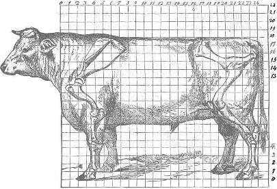
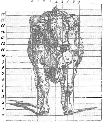

< Назад | Содержимое | Далее >
Домашиiя и селъсхо-хозяйствеииыя живоmиь я. Первым:ъ имене:мъ называютъ безразлично всtхъ прирученныхъ живот ныхъ, способныхъ размножаться въ неволt; второе названiе даютъ лишь тt:м:ъ изъ нихъ, которыя и:мtютъ сельско-хозяй ственное значенiе. Rъ сельско-хозяiiственны:м:ъ .животны:м:ъ наи бодtе важны:мъ для русскихъ хозяйствъ изъ класса млекопитаю щихъ принадлежатъ: крупный рогатый скотъ, лошади, свиньи и овцы; верблюды, ослы и козы и:м:tютъ второстепенное зна ченiе.
Время приручеиiя сельско-хозяйственныхъ животныхъ не
извtстно, но, судя: по изображенiя:мъ на древнtйшихъ изъ египетскихъ памятниковъ (пирамидахъ) , построенныхъ за 4000-5000 лtтъ до Рождества Христова, первоначально были обращены въ домашнее состоянiе крупный рогатый скотъ, козы, ослы и гуси. Лошади, овцы и свиньи приручены, по види:мо:му, позднtе; по крайней :мtpt ихъ изображенiя встрt чаются лишь на болtе новыхъ пирамидахъ, время: построенiя которыхъ относятъ къ 2500-3500 лtтъ до Р. Х. Изъ 140,000 видовъ животныхъ одомашнены по Зет·rегасту всего около 47 видовъ, а по Натузiусу и того :менtе, да и изъ этого ничтожнаго числа сельско-хозяйственное значенiе и:мtютъ лишь нем.ногiе и именно тt виды, которые продовольствуются расти тельным:ъ кор:м.о:мъ; :между ними есть лишь одно всеядное жи вотное-свинья, впроче:мъ и она :можетъ не только жить, но и откармливаться, получая одинъ растительный кормъ. При чина такого подбора понятна.
УЧЕШЕ О РА.3ВЕДЕНIИ. 139

На:зиачеиiе сельско-хозяйствеииь1Хо животных" заключается въ переработкъ растительвыхъ кор:мовыхъ средствъ, негод выхъ или :мало пригодныхъ для питанiя человъка, въ болъе цънные продукты, каковы: :мясо, молоко, сало и проч. Жи вотныя въ то:мъ видъ, въ како:мъ они были первоначально одомашнены и долго послъ того, удовлетворяли незатъйли вы:мъ потребностямъ первобытнаго человъка и овъ заботился лишь о ихъ раз:множенiи. Но съ росто:мъ населенiя, разви тiе:мъ культуры, поднятiе:мъ цiшъ на продукты потребляемые ското:м:ъ, :мало-по-:малу выдвигалась забота о лучшей ихъ оплатt. продуктами скотоводства, само собою возникало стре:мленiе цt лать жи.вотныхъ болъе полезными. По способности къ оплатt. корма между одноименными животными существуетъ иногда огромная разница. :Кому неизвtстно, напримtръ, что по :молоч ности коровы сильно отличаются другъ отъ друга, что на одномъ и томъ же кормt он-в производятъ весьма различныя количества
:молока; кто не знаетъ, что одно животное откармливается легче, другое - трудн-ве. Эта разнообразная способность къ оплат-в корма кроется въ различiи организацiи животныхъ, въ различiи тъхъ свойствъ организма, которыя обуслов.шваютъ его хозяйственную полезность.
Стремленiе достигнуть лучшей -оплаты корма продуктами скотоводства nриводитъ къ необходимости, не довольствуясь размноженiе:м:ъ животныхъ, заняться ихъ разведенiе:мъ, за няться производство:м:ъ животныхъ, сnособныхъ съ наименьшей затратой сырого матерiал::t. производить необходимые человъку продукты. Для достиженiя цъли необходимо внимательно изучить свойства или признаки животныхъ, и такое изученiе рядомъ съ оцfшкой ихъ хозяйственнаго зваченiя должно составлять основу скотозаводскаго искусства.
Свойства или признаки животпых,, Г. Натузiусъ дtлитъ на зоологическiе или :морфологическiе и физiологически обуслов ленные. Зоологическими или :морфологическими онъ называетъ такiе признаки, по которы:м:ъ зоологъ размъщаетъ животныхъ въ различныя группы (семейства, роды и виды), а заводчикъ д-влитъ животныхъ на породы. Примtро:мъ этихъ признаковъ могутъ служить цвtтъ шерсти (масть), присутствiе или от
-сутствiе роговъ, та или другая ихъ величина и форма, длина
140 УЧЕНIЕ О РА3ВЕДЕНIИ.
хвоста и проч. Говоря вообще, эти признаки не им1;ютъ хо
.зяйственнаrо значенiя, такъ какъ ими не опред1;л.я:ется спо собность животнаго къ полезной производительности. Для хо
.з.яина очевидно все равно, какой длины хвостъ у его овецъ;
,цля откармливанiя скота совершенно безразлично, будетъ-ли
<>нъ рогатый или безрогiй. 3оологическiе признаки и:мtютъ хозяйственное значенiе только тогда, когда признаками этими елужатъ такiя части т-J,ла, которы.я непосредственно полезны, хакъ напримtръ шерсть у мериносовыхъ овецъ. Физiолоrи чески-обусловленны:м:и Натузiусъ называетъ т1; свойства, въ которыхъ про_.являетс.я жизненная д1;ятельность орrани31',Ш, ко торыя служатъ вн'tшнимъ выраженiе:м:ъ способности къ полез ной производительности. При:м1;рам:и этихъ свойствъ или при
.знаковъ могутъ служить :мала.я голова, тонкiй костякъ и ко роткi.я конечности, характеризующiе у животныхъ, ими обла
.дающихъ, способность хорошо откармливаться. Мягкость и н1;жность кожи, обширность вымени, способность его спадаться послi; выдаиванiя также будутъ физiологически-обусловленные признаки, по которы:мъ узнается способность животнаго къ производству значительнаго количества молока.
Перейде:мъ теперь къ описанiю са:михъ свойствъ или при
.зваttовъ и главвы:мъ образо:мъ тi.хъ изъ нихъ, ttоторые им1;ютъ
.значенiе дл.я заводчика или влi.яютъ на хозяйственную полез ность животнаrо.
Различiя по возрасту. Въ течевiе индивидуальной жизни свойства животныхъ не остаются .безъ из:мi.ненiя. Въ жизни хаждаго индивидуума можно различать 3 перiода: перiодъ Jr1оло,1,ости (развитiя), зр1;лаго возр ста и старости. Животныя рождаются съ такъ-назыnае:мы:ми :молочными зубами, которые современе:мъ зам:1;няются постоянными. Желудокъ :м:олодыхъ животныхъ иногда (напри:мъръ у жвачныхъ) отличается бо.1ь шей простотой, чtм:ъ у взрослыхъ. Шерсть :мо.JЮдыхъ живот ныхъ нерiщко разнится по цвtту отъ той, какую они и:мtютъ въ зрtло:м:ъ возрастt. Пропорцiи частей тtла также подвер rаютс.я значительны:мъ измtненiя:м:ъ въ теченiе жизни. У .мо
.11одыхъ животныхъ конечности относитедьно развиты сильвtе, поэтому они кажутся долгоноги.ми по сравненiю съ взрослыми; во по :м:tpil' развитiя ростъ туловища опережаетъ ростъ ко-
УЧЕНIЕ О РАЗВЕДЕНIИ.
141
нечностей. Сильно :м:tняется также съ возрасто:мъ способность. къ развитiю, выражающаяся въ неодинаково:мъ приростi. жи вого вtса. Въ первые :мtсяцы посл-1; рожденiя животное раз вивается всего быстрtе, затtмъ развитiе болtе и болtе за медляется и, наконецъ, съ окончанiемъ роста, если только животное не откармливается, вtсъ твла не претерпtваетъ су щественныхъ измtненiй. 3рtлый возрастъ животнаго характе ризуется неподвижностью, сохраненiемъ тtхъ свойствъ и при знаковъ, которые животное прiобрtло въ предшествующiй перiодъ. Наконецъ съ наступлевiе:мъ старости происходитъ упадокъ дtятельвости организма и у:меньшенiе его хозяйствен ной: пригодности. Этотъ перiодъ имъетъ :мало интереса, такъ какъ по экономическил1ъ соображенiямъ животныхъ обыкно венно бракуютъ раньше достиженiя ими старческаго возраста. Половыл различiл. Bci. сельско-хозяйственныя животныя раздъльнополыя; двуполыхъ или гермафродитовъ :между ни:ми нtтъ. Независимо отъ особеннос1·ей въ анатомическом:ъ устройствil дътородныхъ органовъ, самцы и самки отличаются другъ отъ друга цtлым:ъ рядом:ъ приsнаковъ, носящихъ названiе второ степевныхъ половыхъ признаковъ. Разсмотримъ ихъ нtсколькG подробнъе, такъ какъ они имtютъ значенiе для заводчика. Признаки эти появляются впрочемъ не ранъе, какъ съ приближенiемъ половой зрълости; въ раннюю же пору жизни только анатомическiя различiя В'Ь строенiи д·втородныхъ орга новъ отличаютъ самцовъ отъ самокъ. Изъ второстепен ныхъ половых·& призваковъ укажемъ на различiя въ ростt. Самцы, если имъть въ виду только сельско-хозяйственныхъ животныхъ, всегда крупнtе самокъ. Различiя въ ростi. впро чемъ непостоянны: иногда они больше, иногда меньше, что кромъ породы животнаго, повидимому, зависитъ еще и отъ
кормовыхъ условiй въ перiодъ развитiя организма.
Кожа съ ея придатками сильнъе развивается у самцовъ, чtмъ у самокъ; это :можно прослъдить на крупно:мъ рогато:м.ъ скотt, овцахъ и друrихъ сельско-хозяйственныхъ животныхъ, но особенно сильно выступаютъ различiя въ толщивt кожи у свиней и борововъ. Волоса самцовъ rpyбte волосъ са:мокъ, очень тонкая шерсть у барановъ обыкновенно указываетъ на С)lабость тi.лос.1оженiя и должна поэтому избtгаться заводчи-
142 УЧЕНlЕ О Р АЗВЕДЕНIИ.

ками. Накожны.я отдtленiя у барановъ (жирный nотъ) и у друrихъ самцовъ обильнtе. чtм:ъ у самокъ и отличаются болtе интенсивным:ъ заnахомъ. Рога самцовъ сильнtе разни·rы, а иногда самки и совсtмъ не имtютъ роrовъ (наnримtръ, у нtкоторыхъ породъ овецъ). Зам:tчаются также различiя по
зуба:мъ впрочемъ не у всtхъ ж.ивотныхъ, а. лишь у лошадей (такъ-назыв. конскiе зубы отсутствуютъ у кобылъ) и свиней;
у ПОСд'ВДНИХЪ по числу зубовъ самки хотя ВПОЛН'В сходны съ самцами, но имtютъ менtе развитые кдыки. По относитель нымъ раз:м:tрамъ различвыхъ частей тtла :между самцами и самками за:м:tчается нерtдко значительное различiе. У са:м: цовъ с:ильнtе развивается передняя часть тtла, у самокъ - задняя, rдt помtщаются половые и молоко-отдtлительные органы. Эти различiя особенно значительны у крупнаrо скота. Голова самцовъ :короче головы самокъ, она болtе развита въ поперечномъ направленiи, шире въ rанашахъ; затылокъ и лобъ шире и сильнtе у самцовъ1 чtмъ у самокъ. Особенно рtзко проявляются эти особенности у poraтaro скота, обозна чаясь болtе и болtе съ приближенiемъ половой зрtлости.
Костякъ самцовъ rpyбte :костяка самокъ, чего не слtдуетъ терять изъ виду при выборt животныхъ на племя и особенно въ тъхъ случаяхъ, :когда по характеру продук·1·ивности отъ животныхъ требуете.я нъж.ное тtлосложенiе. Выборъ самцовъ съ очень тонкимъ костяко:мъ и нtжнаго тtлосложенiя, слtдова тельно, лишенныхъ второстепенныхъ призна:ковъ, хара:ttтеризую щихъ ихъ полъ, сопровождается вредными послtдствiя:ми и ведетъ къ ослабленiю потомства, :къ развитiю въ немъ болtзней и въ-концt концовъ къ уменьшенiю хозяйственной пригод ности животныхъ. По темпераменту самцы гораздо энерrичнъе, живtе самокъ, неръдко становятся свирtпыми и дtлаются опасными для ухаживающихъ за ними людей. Мясо сам:цовъ rpyбte :мяса самокъ и имъетъ специфическiй запахъ, напри
:м:tръ, у барановъ и быковъ, а у послtднихъ сверхъ того окрашено значительно тем:нtе. Б.11агодар.я болtе живому темпе раменту, самцы откармливаются труднtе сам:окъ. Bct указан ны.я до сихъ поръ различiя :между самцами и самками тtсно связаны съ развитiемъ полового аппарата, и если мужское животное в1> молодомъ возрастt лишить сtменныхъ железъ
УЧЕВIЕ О РАЗВЕДЕНIИ; 143

(я:ичекъ), то они не про.являются столь pilзRo и Rастратъ становите.я nохожимъ на самку. Это сходство выражается въ болtе спокойномъ флеrматичесRомъ нравt и вслtдствiе того въ большей способности къ откарм:ливанiю, въ утонченiи шерсти и большей е.я уравневности (у валуховъ), въ болtе узкой го ловt, слабомъ затылкt и тонRой удлиненной met. Ростъ самцовъ не тольRо не .задерживается Rастрацiей, но да.же усиливается, nодтвержденiем:ъ чего можетъ, вапримtръ, служить рогатый скотъ. Благодаря указавным:ъ послtдствi.ямъ Rастрацiи, къ ней прибtrаютъ съ цtлью увеличить хозяйственную nолез ность .живо·rныхъ: nоЕысить ихъ способность RЪ откорму, увели чить тонину и уравненность шерсти, укротить нравъ, отчего зависитъ и б6льшая пригодность RЪ работt; но такъ каRъ кастрацiя: ослабл.яетъ тtдосложенiе, то ее не слtдуетъ про изводить въ раннiй впзрастъ въ том:ъ случаt, когда им:tется въ -виду пользоваться животнымъ, какъ рабочимъ. Кастрацiей самокъ (удаленiем:ъ яичниRовъ) не достигается ниRакихъ хозяйственныхъ выгодъ и она RЪ тому же опасна для жизни, а потому и не примtн.яется на практикt.
Формы rпrьл.а. Для оцtнRи качествъ животныхъ необходимо
обратить вниманiе на ихъ тtлосложенiе, такъ Rакъ по нему, до извtстной степени, по крайней :мtpt, можно судить о полез ной производительности. На это обстоятельство уже давно обра тили вниманiе англiйскiе заводчики, требу.я отъ мясного скота туловища въ формt прямоуrольниRа. Такъ, Стефенсъ говоритъ, что туловище вполнt откор:мленнаго животнаго должно быть похоже на параллепипедъ-геометрическую фигуру, ограни ченную со всtхъ сторовъ прямоугольниками. Дtиствите.; ьно, стоя съ боку животнаго, легко представить себt описанный около его тtла пр.ямоугольникъ, одна изъ длинныхъ· сторонъ котораго проходитъ черезъ холку и крестецъ, другая, параллель на.я: ей, черезъ локоть, а двt коротRi.я (вертикальныя) стороны черезъ плече-лопаточное сочлепевiе (передняя) и черезъ сt далищный бу1'оръ (за,; ;в.я.я). АнглiйсRiе заводчики требуютъ, чтобы этотъ пря:м:оугольникъ распадался на 3 равны.я части: переднюю отъ плеча до задняго угла лопатки, вторую - отъ предыдущей точки до наружнаго выступа подвздошныхъ ко стей (моклоковъ) и третью-отъ моклоRовъ до сtдалищныхъ
144 УЧЕНIЕ О РАЗВЕДЕНIИ.

бугровъ. Причины этихъ требованiй заключаются въ сл1щую щемъ: при слишкомъ укороченной передней части, вмtщаю щей дыхательные органы, лопатки поставлены круто, грудь узка и слабо развита, что указываетъ на недостаточно развитые дыхательные органы, и поэтому должно считаться: пороком.ъ. Растянутость средней части, заключающей органы пищеваренiя:, признается: нежелательной, потому что служитъ указанiемъ на чрезмtрное развитiе этихъ орrановъ, вслtдсrвiе обильнаrо употребленiя: смолоду rpyбaro корма и обыкновенно бываетъ при узкой и слабой спинt, а такъ какъ на спинt находится: наиболtе Ц'Бнное мя:со, то поня:тно стремленiе заводчиковъ
:мясного скота по возможности увеличить ширину послtдней, что невозможно безъ укороченiя: средней части туловища. Наконецъ желанiе придать надлежащую длину задней части тtла уя:снитс.i намъ, если примем.ъ въ разсчетъ, что именно здtсь находится: наибольшее :количество и прито:мъ наиболtе цtннаrо :мяса.
Стефенсъ требуетъ, чтобы фигура откор:мленнаго живот наго выполняла параллепипедъ не только сбоку, но также сверху, спереди, сзади и снизу.
Зеттеrастъ дtлитъ длину туловища (отъ плече-лопаточнаrо сочлененiя до сtдалищнаrо бугра), какъ это видно изъ при лаrае:маrо рисунка (стр. 145), на 24 части и требуетъ, чтобы каждая изъ трехъ частей тудовища заключала въ себt 8 такихъ дtленiй. Такую фигуру онъ считаетъ нормальной и обозна чаетъ ее дробью 8/ 8 ; формы же т-l;ла животныхъ съ укорочен
/ 8
/ 8
/ 8
ной передней или задней частью выражаетъ дробями 7 , 6/ 8 ,
6 5
/ 7, / 7
и т. д., у которЪiхъ числитель выражаетъ длину
передней, а знаменатель-задней части тtла. Сумма числителя: и знаменателя, вычтенная изъ 24, даетъ длину средней части
/ 7
/ 7
/ 7
туловища, напри:мtръ, дробь 5 показываетъ, что изъ 24 частей, на :какiя раздtлено · туловище животнаrо, 5/ 24 приходятся на долю передней части, ½. на долю задней и 12/ 24 на долю
средней части т1ша.
Въ той же единицt (= 1/ 4 длины туловища) Зеттеrастъ выражаетъ размtры животнаrо въ ширину и высоту, требуя, на примtръ, чтобы ширина животнаrо въ плечахъ и въ мокло:кахъ равнялась 8, высота въ холкt не превосх()дила 20 у дойныхъ коровъ и 18 у мясного скота.

УЧЕНIЕ О РА3I!ЕДЕНIИ. 145
Стремленiе со3дать общую норму для всtхъ седьско-хозяй ственныхъ животныхъ, Нату3iусъ по справедливости признаетъ

12
fl
10
9
8
7
6
J\
12
fl
10
9
8
7
6
J\
12
fl
10
9
8
7
6
J\
Фиr. 5.

19 - - ---,-;. -=,--,-- -- -;--',----'i-
fl 1-- - - - :--+- -+- -±
19 - - ---,-;. -=,--,-- -- -;--',----'i-
fl 1-- - - - :--+- -+- -±
19 - - ---,-;. -=,--,-- -- -;--',----'i-
fl 1-- - - - :--+- -+- -±
'IИ PBBHCJtIЙ1 ОВЩЕЕ ЖИВОТНОВОДСТВО, 10
146 УЧJШIЕ О РАЗВЕДЕВIИ.
неосуществимы:мъ, такъ какъ формы животвыхъ въ значитель ной степени :мtняютСJI въ зависимости отъ характера ихъ продуктивности. Болtе всего къ прямоугольной фор:мt прибли жается т·влосложенiе :мясного скота, да и то въ состоянiи полной откор:м:ленвости, но формы лучшихъ по :молочности коровъ значительно отъ вея отклоняются и напоминаютъ скорtе трехуrольникъ, усtченной вершиной обращенный впередъ, а основанiем:ъ кзади. Фигуру анrлiйской скаковой лошади также правильнtе сравнить съ трехуrольвиком:ъ, основавiе котораrо направлено впередъ, а усtчевная вершина кзади.
Наивыrоднtйшiя длина и постановка конечностей также мtняются въ зависимости отъ цtли содержанiя жюютныхъ. У мясного, наприМ:tръ, скота, особенно назпачае:маrо для стойловаrо содержанiя, :мы требуемъ весьма слабыхъ конеч ностей, едва достаточныхъ для поддержанiя массивнаrо туло вища; у скаковой или рысистой лошади напротивъ того ко нечности должны быть сильно развиты. Изъ этихъ немноrихъ примtровъ становится очевиднымъ, что формы тtла живот ныхъ, относительное развитiе различныхъ частей до.1жны широко измtня.ться въ зависимости отъ вазначенiя животнаrо и что поэтому общаrо обра:ща, по которому дол.жны быть сформированы животныя, идеальнаrо отношенiя. :между частями тtла, общаrо для всtхъ случаевъ или такъ называемой "iapмouiu 07, cmpoeuiu" быть не :можетъ, и заводчикъ сдtлалъ бы капи тальную ошибку, если бы поставилъ себt задачей стремиться къ производству животныхъ, гармонически сложенныхъ.
Англичане, у которыхъ заводское дtло развилось ран·.ве, чtмъ на континентt Европы, не увлекаясь предвз.яты:м:и взглядами о красотt и rарJ1юнiи формъ, обратили вниманiе лишь на тt признаки и особенности тtлосложенiя, которые д·вйствителъно находятся въ соотвtтствiи съ способностью животнаrо къ полезной производительности. Эти-то вотъ су щественные признаки и носятъ названiе статей. Послt сказаннаrо само собою становится понятнымъ, что стати живот ныхъ, содержи:мыхъ для различныхъ цtлей, болtе или менtе различаются друrъ отъ друга и тt:мъ сильнtе, чtмъ, значи тельнtе различiя между цtля:ми содержанiя. Стати, напримtръ, мя.сныхъ .J!tивотных;ъ отличаются отъ статей м:олочныхъ, но
УЧЕНIЕ О РАЗВЕДЕНIИ. 147
разница :мевtе значительна, чъ:мъ :между статями :мясного скота и рысистыхъ или скаковыхъ лошадей; стати таксы
{породы собакъ съ кривыми ногами, употребляемой охотниками
,,цл.я: добывавiя дичи ивъ норъ), совершенно nротивопо.1ожны статя:мъ борвой и проч.
Недостаточность mиьшнихz, призиакоflо для правил:ьиой
-оцrьnки хозяйствеино-пол,езиыхz, свойство животныт. _Обращая вним:анiе на однъ лишь стати, то есть, на то, что есть суще
-ственнаrо ВЪ ЭКСтерьерiJ, ОТрЪШИВШИСЬ ОТЪ ВС'ВХЪ невiJрНЫХЪ представленiй о rармонiи въ строенiи, ваводчикъ все-таки не им·ветъ вовможности вполвi; вtрно судить по нимъ о способ ности животнаrо къ полевной проивводительности, такъ какъ внъшнiе nривнаки и свойства животныхъ, хотя и находятся въ соотвtтствiи съ этой способностью; во на ряду съ ними необходима наличность еще и другихъ условiй, о 1tоторыхъ
.мы или совсъ:мъ не може:мъ судить по внъшности животнаrо, или въ состоянiи дълать лишь прибли:штельщ.-ш, гадательныя
.за1tлюченiя.
Поясни:мъ скаванное при:мtро:мъ. Совершенно очевидно, что ска1tовая лошадь съ чрез:мilрно короткими и толстыми ногами, съ крутой постановкой лопатокъ, съ слабыми пороч ными сочлененiями не удовлетворяетъ своему назначенiю и не способна Rъ быстрому бtгу, но и лошадь, свободная отъ
-всъхъ указанныхъ недостатковъ, образцово сложенная: обла-
-дающая всъ:ми статями хорошаго скакуна, :можетъ окаватьс.я при испытанiи неудовлетворительной. Это не покажется на:мъ
-етранны:мъ, если подумаем:ъ о то:мъ, что животное, способное къ чрев:мtрно быстрымъ движенiямъ, должно обладать не
-только безукоризненно развитыми локомоторными органами, но сверхъ того должно имtть :мощно развитыя легкiя и сердце, нервную систему способную передавать волевые импульсы
.мускула:мъ съ rоравдо большею скоростью, чъ:м:ъ у тяжело возовъ, наnримъръ. Хорошiй скакунъ въ нtсколько минутъ
-еовершаетъ работу, производимую т.яжеловозомъ чуть не въ теченiе ц,J;лаго дня. При :мышечныхъ напр.яженiяхъ, какъ :мы уже знаемъ, образованiе углекис.1оты усиливаете.я и образуете.я ея въ единицу времени очевидно тt:мъ больше, чt:мъ значи тельн,J;е работа; поэтому органы, назначенные дл.я ея выдtле-
10•
148 УЧЕНIЕ О РАЗВЕДЕНIИ.
нi.я изъ тiла --- легкi.я, должны быть развиты тtмъ сильнtе, чt:мъ большее количество движенi.я совершаетъ животное въ единицу времени_ При образцово-развитыхъ легкихъ выдtле нiе углекислоты изъ организма можетъ совершаться правильно лишь при достаточно дt.ятельномъ кровообращенiи, то естЬ при достаточно развитыхъ сердцt и кровеносныхъ сосудахъ. При слабой дt.ятельности сердца, отъ чего бы она ни зависtла: отъ недостаточно ли разви'l·аго :мыmечнаго ело.я или порока заслонокъ; при недостаточно упругихъ артерiальныхъ стiшъ1
при варикозно:мъ расmиренiи венозной системы, ировообраще
вiе совершаете.я медленно, неправильно; освобожденiе орга низма отъ продуктовъ, образующихся при мышечныхъ сокра щенi.яхъ, замедляете.я и, очевидно, животное становите.я тtмЪ
:менtе способно къ быстрымъ движенi.ямъ и вообще къ напря женной мышечной работъ, чtмъ слабtе у него кровообраще вiе и дыханiе. Легкiя и сердце, вполнt достаточныя для флеrматическаго тяжеловоза, оказываются слабыми д.:r.я рысака. или скаиовой лошади и при одинаковомъ ростt у послtдвихъ сердце, напримtръ, должно быть раза въ два т.яжел:tе, чtмъ у первыхъ. Пробtга.я въ минуту версту, хорошiй скакунъ заставл.яетъ сокращаться свои мускулы съ едва понятною дла насъ быстротою, произвольное же сокращенiе :мускуловъ при бtrt происходитъ не прежде, чtмъ по иннервирующи:мъ ихъ нервамъ пробtжитъ токъ отъ периферiи къ центру и отъ центра къ периферiи (отъ :мускула къ :мозгу и отъ :мозга къ :мускулу). Очевидно, что проводимость нервовъ у xopomaro скакуна должна быть значительно больше, чtмъ у животныхъ, способ ныхъ лишь къ медленны:мъ движенiямъ. Слаба.я проводимость вервовъ даже при наличности всtхъ остальныхъ условiй, веобходи:мыхъ дл.я про.явлевi.я возможной быстроты движевiй, визведетъ безупречнаго по экстерьеру скакуна на степень ординарной лошади. О развитiи легкихъ, о ихъ объе:мt :мы
:м:оже:мъ ; ,tлать бо.1tе или :мевtе вtрны.я заключенi.я по rлу бинt груди, о раз:м:tрахъ сердца судить гораздо труз,нtе по внi.шни:мъ признакамъ, объ упругости же легочной ткани, играющей не :менtе важную роль въ процессt дыханi.я, чtмъ и самое развитiе легких , о проводимости нервовъ, о числi. сокращенi( которое способно совершить :мышечное волокно
УЧЕНIЕ О РАЗВЕДЕНIИ. 149
,въ теченiе единицы времени, ш, внtшвимъ признака:м:ъ живот наго, по его тtлосложенiю судить рtmительно невозможно, какъ бы внимательно мы ихъ не изучали.
О :молочности животнаго хотя и :можно двлать приблизи тельныя заключенiя по качествамъ вымени и нtкоторым:ъ дру ги:м:ъ внtшнимъ признакамъ, но эти сужденiя однако не насто.1ько точны, чтобы давать намъ возможность дtлать совер,шенно без ошибочные выводы и улавливать тонкiя индивидуальныя различiя по молочности. Недостаточность внtшнихъ при.шаковъ въ это:м:ъ случаt отчасти объясняется тt:м:ъ, что самый молокоотдtди тельный аппаратъ - железа не впо.шt доступенъ для нашего изс.11tдованiя, отчасти же благодаря огромному косвенному влiянiю, оказываемому дtятельностъю пищеварительныхъ орга новъ на функцiи :молочной железы, и наконецъ потому еще, что у васъ вtтъ никакой возможности предугадать убыль удоевъ по м:tpt удаленiя отъ времени родовъ, а она со вершается очень раз.11ичво у разныхъ животныхъ. Опять слtдо- . вательно и здtсь факторы, въ сильной степени опредtляющiе раз:м:tръ способности животнаго къ полезной производитель ности, не впо.тнt или даже совсtмъ не проявляясь во внtшнихъ признакахъ, ускользаютъ отъ вашего изслtдовавiя, что и лишаетъ насъ возможности по экстерьеру животнаго дtлать вполвt надежныя заключенiя о его продуктивности.
Какъ для заводчика, такъ и для хозяина, выбирающаrо . животныхъ для тtхъ или иныхъ цtлей подьзовавiя, очень важно обращать вниманiе ·на тъ особенности консти·гуцiи или тtлосложенiя, которыя выражаются словами рубый и 'Н,1ЬЖ'Н,'ЫU. Грубы:мъ называется животное съ большой массивной головой, неуклюжими конечностями, толстыми костями, грубой густой шерстью, толстой кожей, сильно развитыми рогами и проч. Животное съ противоположными особенностями: съ легки:мъ костякомъ, маленькой головой, тонкой рtдкой шерстью, нtж ной и подвижноit кожей называютъ пtжнымъ. Смотря по назначенiю животнаго, оно должно обладать тtмъ или другимъ тtлосложенiемъ; если это животное рабочее, то оно должно быть грубо, такъ какъ только при этомъ условiи :можно разсчитывать на его вынос.11ивость и силу; напротивъ того, тъ скота, содержимаго для молока и откармливанiя на убой,
150 УЧЕНIЕ О РА3ВЕДЕНIИ.

необходимо требовать нtжнаго тtлосложенiя, ибо лишь нtжно сложенвы.я животныя ока3ываются къ этому наиболifе •. при годными и лучше оплачиваютъ кормъ; меньшую же ихъ выносливость и тtлесную слабость, связанную съ нtжной организацiей, нельза считать недостатками въ томъ случаt" когда животныя не употребляютс.я на работу.
Нужно однако оговориться, что какъ грубость, такъ п нtжность тtлосложенiя, я:вляась хоs.яйственно и заводски полез ными качествами животныхъ, сохраняютъ это значенiе лишь. до тtхъ поръ, пока заключены въ извtстные предtлы; когда же нtжность или грубость конституцiи перешли эти границы, когда животныя прiобрtли до того нtжное тtло сложенiе, что у са:мцовъ утратились нtкоторые изъ ихъ второстепенны ъ половыхъ признаковъ и они сдiшались бо лtе похожими на самокъ, чtмъ на самцовъ, это служитъ указанiемъ на переразвитостъ и 3начительно понижаетъ цtн вость животныхъ, какъ племенныхъ производителей, на чт().
:мы уже и:м:tли сдучай указать выше. Переразвитость ·выра жается впрочемъ различно у разныхъ животныхъ и потому дл.я поясненiя намъ необходимо указать здtсь на нtскольк() примtровъ. Всего рtзче про.явл.ялась она у стараго типа электоральнаго племени мериносовыхъ овецъ, образовавшагося въ то врем.я, когда внимаяiе заводчиковъ было исключительн() направлено на полученiе возможно тонкой шерсти.
Особенно характерный видъ и:мtетъ у нихъ голова, П()
фор:мt напоминающая голову зародыша или новорожденнаго ягненка. Лобъ шарообразно выnуклъ, впереди глазныхъ вnа динъ замiчается значительное вдавленiе; лицева.я часть черепа. слабо раsвпта, узка. Словомъ черепъ представл.яетс.я недораз витымъ. Rожа лица лишена шерсти и покрыта нtжными ко роткими волосками, а на ушахъ и вокругъ rлаsъ-нерtдко и совсt:мъ гола.я. ·
У переразвитой овцы костякъ тонкiй, слабый, сочлененiя вздуты; особенно это замtтно на nередвих.ъ конечностяхъ, rдt подъ та.къ называе:м:ы:мъ ко.11tвомъ (соединенiемъ подплеч ной кости съ собственно ногою) нога сильно сжата, какъ бы перет.янута, что кромt тонкости костей зависитъ еще отъ слабаго·раsвитiя :мускуловъ и сухожилiй, подкожной клtт-
УЧЕНIЕ О Р А3ВЕДЕВIИ. 151
чатки и собственно кожи. На остальныхъ частяхъ тtла кожа также тонка и слабо развита, трудно собирается въ складки и покрыта ръдкою хотя и тонкою шерстью. Особенно рtдка шерсть на брюхt и внутренней поверхности ноrъ. Эти мtста часто даже совершенно лишены шерсти и оголены.
Стре:мленiе развить у коровъ чрез:мtрвую молочность со провождается nоявлевiем:ъ пороковъ тtлосложенiя и vризваковъ переразвитости. Нормальны.я пропорцiи черепа изм:tн.яются: лобъ укорачивается, лицевая часть (морда), наоборотъ, удли няется, разстоянiе :между в-hтвя:ми нижней челюсти (rанаmам:и) съуживается. Голова быковъ вытягивается въ продольно:мъ паnравленiи, прiобрtтая сходство съ коровьей; уrолъ соединенi.я лобныхъ костей съ затылочной заостряется 1) , вслtдствiе чего затылокъ слабо развивается и затылочный гребень сильно вы дается надъ rрР.бнемъ мало:мускулистой и обыкновенно длинной шеи. Узкая грудь, заостренная холка, плоскiя, сильно уда ленны.а друrъ отъ друга ребра, вогнутая спина,, обвислое брюхо, залопаточныя впадины, огромны.я паховыя я:м:ы и сильно ниспадающiй кзади крестецъ - допол:няютъ невзрачную фи гуру переразвитой коровы. Внtшнимъ недостатка:м:ъ тълосло · женiя соотвtтствуютъ слабо развитой дыхательный аппаратъ и ослабленiе общей конституцiи, дtлающiе животныхъ мало приrодвы:м:и въ заводскомъ отноmенiи. У сильно переразви тыхъ коровъ падаетъ даже и :молоко-производительная способ ность, такъ что онt утрачиваютъ разо:м:ъ и заводскую, и хо зяйственную пригодность. Мы разс:м:отрим:ъ позднtе причины этого явленiя; теперь же ограниqим:Gя сказанным:ъ для харак теристики 'l'ОГО состояпiя организма, которому даютъ названiе переразвитости.
Прямую противуположность переразвитости составляетъ грубая конституцiя. Для примtра опишемъ въ общихъ чер тахъ старый типъ пеrретти 2) . Массивная голова съ сильно развиты:м:ъ затылком:ъ, грубый костякъ, короткая и толста.я шея, широкая спина, бочкообразное туловище, густая, грубая
') У нормально <.,;11оженвыхъ животны:х:ъ онъ долж.енъ быть бливокъ къ
прямому.
2) Од!IО ивъ шrеиенъ меривосовоii породы овецъ, возникшее первона чuьно въ Австрiи.
152 УЧЕНIЕ О РАЗВЕДЕНIИ.

сильно потная шерсть, покрываIGщая голову до носового зеркала, обрастаетъ уши и распространяется почти до самыхъ копытъ. Просторная грубая: кожа собрана въ обильныя: складки, осо бенно развитыя: на rnet и бедрахъ, но нерtдко поя:вля:ющiяся: и на туловищt, такъ что все животное представляется: испещ ренны:мъ брыжжа:ми, покрытыми болtе длинною, грубою, не и:мtющею характера :мериносовой, шерстью. Эти признаки рtзко отличаютъ грубую мериносовую овцу отъ переразвитой. Окороспrьлостъ, какъ показываетъ ·самое названiе, есть свойство животныхъ, въ сижу котораrо они быстрtе нормаль наго достиrаютъ полнаго ра:звитiя и роста. У скороспtлыхъ животныхъ процессъ роста трубчатыхъ костей совершается: быстрtе, чtмъ у животныхъ нескороспtлыхъ и раньше на ступаетъ сращенiе эпифизовъ съ дiафиза:ми, послt чего пре кращается и самый ростъ животнаrо въ высоту 1 ) . Скоро спtлость СJI'Вдуетъ разсматривать, какъ хозяйственно полезное качество, такъ какъ, благодаря: ей, сокращается перiодъ раз витiя, въ теченiе котораго животное, не принося дохода, тре буетъ лишь расходовъ со стороны хозяина. Скороспtлость· не представля:етъ природнаrо качества животныхъ и не состав ля:етъ особенности ни одной, изъ так.ъ на3ываемыхъ при:ми тивныхъ породъ (с:м. ниже); она прививается: животны:мъ культурою и развивается: при обильномъ кормленiи смо лоду. Чtмъ обильнtе кор:мленiе, тtмъ въ большей степени должна раавиваться и скороспtлость. Обильное кормленiе должно начинаться съ утробной жизни и продолжаться въ те ченiе всего перiода развитiя. Для: проявленi.я. скороспtлости необходимо возможно дольше продовольствовать :молодыхъ жи вотныхъ ихъ естественною пищею - :молоко:мъ, так.ъ какъ по слtднее не :можетъ быть вполнt замtнено никакими сурро гатами и всякая замtна молока другими кормовыми продук тами постоянно сопровождается задержкою въ развитiи opra. ни3ма. Послt отсадки дача концевтрированныхъ кормовыхъ средствъ составляетъ положительную необходимость и на од-

1
1
1
) Ростъ въ длину трубqатыхъ костей происходитъ не по всему ихъ протлженiю, а исключительно на счетъ, такъ вазываемаrо, образовательнаго хрнща, находнщаrосн на грапицахъ между средней частью кости и ен око
нечвостнми. Съ окuстенtвiемъ этого хряща прекращается и ростъ въ цлинJ.

УЧЕНIЕ О РАЗВЕДЕНlИ. 153
но.мъ ctнt, а тi мъ болtе на· соломt или мякинt нечего и думать выращивать скороспtдыхъ животныхъ. Со скороспt лостью находится въ нtкоторой зависимости за:мtна :молоч ныхъ зубовъ постоянными. Это влiянiе впрочемъ при3нается не всtми, оно, напримi;ръ, не за:мtчается у лошадей. У овецъ же связь :между развитiемъ 3убовъ и скороспt.1юстью не под 1ежитъ никакому сомнi;вiю.
Точно также и для крупнаrо poraтaro скота это установлено наблюденiями Фюрстенберга. Опъ замtтилъ именно, что у круц наrо рогатаго скота существуютъ слtдующiя ра3личiя въ ра3- витiи зубной системы между скороспtлыми (I) и вескоро спtлыми (11) животными:
При рожденiи . Къ 6 иtсацаиъ
"10
" 14
"15
" 2 rода:мъ
" 2 " и 1 иtсацу
" 2 ,, ,. 6 иtс.яцамъ
" 2 ,, " 9 ,,
" 2
" 2
" 2
" 9
" 9
" 9
п ,,
" 3 ,, п 3
При рожденiи . . . . . . .
ltъ 12-14 дневному возрасту . " 3 недt,1лмъ
6 мtсяцамъ
" 15 ,,
" 18
1 году 9 иtснцамъ
" 2 годамъ . . ..
2 rодамъ 6 иtсяцамъ
I.
6-8 рtзцовъ и 4-6 коревныхъ зубовъ въ каждой челюсти.
поавллется 11ервый постолнный коренной зубъ.
коронки сильно стерты, зубы звачите.11ьно раздвинуты.
uроµtзываетса среднлл пара постолнныхъ рtзцовъ.
второй: постоянный коренной: зубъ. третiй постоянный коренной зубъ. внутреннiе среднiе зацiшы. nеремtняются первые и вторые молочные коренные зубы.
nеремtняется 3-й моJiочный коренной зубъ.
наружные постоянные рtзцы. угловые (крайнiе) постолнвые рI;:щы.
II.
4 молочвыхъ рtзца.
6 рtзцовъ и 8 коренныхъ зубовъ.
8 рtзцовъ и 12 коренныхъ зубовъ. первый посто.ннный: коренной зубъ. второй постоянный: коренной зубъ. коронки сильно стерты, рtзцы да.1еко от стонтъ друrъ отъ друга.
средняя пара постолнныхъ рtзцовъ. третiй постоянный коренной зубъ. перемtна перваrо и втораrо моJючныхъ коренныхъ зубовъ.
154 УЧЕНIЕ О РАЗВЕДЕНIИ.

2 "
• 3
3
3
3
" " 3 :мtсяца:мъ
" 3 10 "
внутреннiе среднiе зацtuы.
перемtна третЫ1rо :мо.1очнаrо коревнаrо зуба.
наружные постоянные рilзцы. yrJioвыe (крайнiе) постоJJнные рtзцы.
Слtдовательно, различiе :между скороспtлы:м:и и нескоро спtлы:м:и животными про.является 'въ данно:м:ъ случаt уже при рожденiи; затtмъ смiша рtзцовъ происходитъ быстрtе у ско роспtлыхъ животныхъ, но въ появленiи nосто.янпыхъ корен ныхъ зубовъ и въ замtнt и:м:и :м:олочныхъ- различiй нtтъ. Исключенiе замtчается лишь при за:м:tнt 3-ro коренного :м:олоч наrо зуба, происходящей у скороспtл:ыхъ трем.я :м:tс.яца:м:и рань ше. Послt сказаннаrо дtлается понятной необходимость для предупрежденiя ошибокъ при опредtленiи возраста не оrра ничиватьс.я ос:м:отро:м:ъ однихъ рtзцовъ, а обращать кро:м:t того вни:м:анiе и на состоянiе коренныхъ зубовъ.
Спутникомъ скоросntлости слtдуетъ признать еще сокраще нiе перiода беременности, под:мtченное Натузiусо:м:ъ у овецъ. По его наблюденiямъ у двухъ породъ овецъ, изъ которыхъ одна (саутдауны) отличается скороспtлостью, а друга.я (:мериносы) нtтъ, перiодъ беременности въ среднемъ различаете.я почти на 6 сутокъ. Замtчательно, что у помtсей этихъ _ породъ беременность продолжается тt:м:ъ меньше чtмъ больше въ
/ 8
/ 8
/ 8
nо:м:tси саутдаунской крови, наконецъ, у животныхъ съ 7 саут
даунской крови, перiодъ беременности не отличается отъ на блюденнаrо у чистыхъ саутдауновъ. По наблюденiямъ Нату зiуса nерiодъ беременности у:
:мериносовъ . 150,3 .в;ней
саут,цаунскихъ 144,2 " nоJiукровныхъ саутд. - мерин. 146,3 "
/ 4 саутдауно.въ и\аб 5 я.
f3
f3
f3
\¼:мериносовъ J ' ;i;
1 44
1 44
1 44
1 /в саутдауно.в-ь и} 9
•;. :иеривосовъ , "
Про:м:ежуточна.я. продолжительность беременности у по:м:tсей указываетъ на наслtдственность скороспtлости. Изъ nризнаковъ скороспtлости укажемъ еще на болtе слабое развитiе желу дочно киmечваrо канала у скороспtлыхъ животныхъ, зависящее отъ обильнаrо nитавiя и употребленi.я концентрировавныхъ кор:мовыхъ nродуктовъ. Хотя до сихъ поръ и не существуетъ пр.ям.ыхъ наблюденiй по этой части, по, nривима.я въ сообра-
УЧЕВJЕ О РАЗВЕДЕНIИ. 155
.женiе несомнiшно доказанное тоqными опытами влiянiе корма на развитiе и объемъ пищеварительвыхъ оргаповъ, нельзя со:инtватьс.я въ томъ, что у скороспtлыхъ животпыхъ отно сительный объемъ кишечника меньше, чt:мъ у животвыхъ нескороспtлыхъ.
Соотвtтственно съ болtе слабымъ развитiем:ъ пищевари тельныхъ органовъ средвя.я часть туловища, вмtщающа.я эти органы, укорачиваете.я и по длинt приб.шжается къ перед ней и задней его частям:ъ. Замtчательно также, что у скоро спtлыхъ животныхъ отношенiе между живымъ и убойнымъ вtсомъ болtе выгодное, чtмъ у животныхъ нескороспtлыхъ, или другими слова.ми, у первыхъ убойный вtсъ составл.яетъ большiй нроцентъ живого, чtм:ъ у вторыхъ. Этотъ фактъ констатированъ наблюденi.ям:и Бодемана, показавши.ми, что у нескороспi.лыхъ воловъ гаронсitо-лимузинской: и нормандской nородъ убойный вtсъ составл.яетъ 59,56 и 64-,36¾ живого,
а у скороспtлаго шорторнско-авгускаго 72,31¼. Къ тtмъ
же заключенiямъ привод.ятъ опыты Вильямса, Вольни и мои, изъ которыхъ оказалось, что у хорошо кормлевныхъ смолоду животныхъ убойный вtсъ составляетъ бодьшiй процентъ живого, чtмъ у животныхъ, получавшихъ объемистый малопитательный кор:м:ъ. Причина этого явленiя отчасти заключается въ мень шемъ развитiи кишечника у скороспtлыхъ (хорошо кормлен ныхъ съ молоду животныхъ), но главнымъ образомъ она кроется въ особенност.яхъ ихъ тtлосложенi.я. Чtмъ короче конечности и массиввtе туловище, чtм.ъ больше послtднее приближается къ формt прямоугольника, т-:hмъ большiй процентъ убойный вtсъ составляетъ отъ живого.
Упомянутыя особенности тtлосложенi.я не слtдуетъ впро
чемъ ставить на счетъ скороспtлости. Короткiя конечности встрtчаются у. животныхъ очень плохо кормимыхъ и на оборотъ: скороспtлыя животны.я обладаютъ иногда длинными конечностями, при:м:tро:м:ъ чего :м:ожетъ служить англiйская скаковая лошадь. Прямоугольна.я форма туловища, характе ризующая скоросntлыя :м:..ясныя породы, пе зависитъ исключи тельно отъ скороспt.11ос1·и и можетъ иногда совершенно от сутствпвать, какъ, вапримtръ, у тtхъ же скаковыхъ лошадей. Rороткi.я же конечности и туловище въ видt прямоуго,;rьника
156 УЧЕНIЕ О РАЗВЕДЕНIИ.
:и.ясны.я породы скота получаютъ отчасти вслtдствiе подбора, отчасти благодаря :мало:му упражненiю мышечной системы.
Измrьиенiе призпаuобо и свойсrп6'6 животиыхr, подо влiяпiемr, различиыхr, причиио. Формы и признаки животныхъ только поверхностному наблюдателю кажутся постоянными, неизмtн
ными, на самомъ же дtлt они отличаются подвижностью и измtн.яются сообразно съ тtми условiями, въ которы.я ста вится орrанизмъ животныхъ. Измtненiе признаковъ и свойствъ животныхъ происходитъ rлавн1,1мъ образомъ въ перiодъ роста и ра3витiя, во отъ нихъ не застрахованы и взрослы.я живот ныя. Для 3аводчика ХО3яина чрезвычайно важно ознакомиться съ измtненiя:м.и, происходящими съ животными подъ влiянiемъ ра3личныхъ причинъ, дtйствующихъ то въ блаrоnрiятно:мъ, то въ неблаrопрiятномъ для нихъ направленiи. Наибольшим:ъ посто.янствомъ отличаются такъ называемые зоодоrическiе при знаки, но и они не моrутъ устоять при дtйствiи ра3личныхъ факторовъ, иногда намъ совершенно пеизвtстныхъ. Изъ извtст ныхъ примtровъ измtнчивости зоолоrическихъ признаковъ укажемъ на наблюденiя Вилькенса, за:мtтившаrо, что признаки альrаускаrо скота, разводимаго въ чистомъ видt въ Венгрiи, постепенно утрачиваются и онъ мало-по-малу. приближается по экстерьеру къ степному скоту. Эти измtненiя, проявлялись rлавнымъ образомъ въ измtненiи цвtта шерсти, 3атtмъ въ величинt и направленiи роговъ, а также въ и3:мъненiи формы черепа. Напри:мtръ, у вывозной альrауской коровы рога имtли всего 19 сантиметровъ длины, были нtсколыю сплюснуты и направлены впередъ и вверхъ, у ея дочери (родившейся въ Венгрiи) рога достигали 22 сант. длины, были нtсколыtо скручены по оси и направлены назадъ, потомъ наружу и вверхъ. Рога внучки ввозной коровы имtли цилиндрическую форму, достигали 23 сантиметровъ длины и были направлены наружу, а концы ихъ впередъ и вверхъ. Бросалась также въ rлаза уменьшающаяся ширина лба въ вискахъ, достигавшая у :матери 26, у дочери 24 и у внучки 23,5 еаптим.етровъ. У другой выводной альrауской коровы длина роговъ была 15,5 сант., ширина лба 25 сантиметровъ; а у ея родив)Ilейся въ Венгрiи дочери рога достигали 19, 5 сант. Ддины, а лобъ 24,5 сантим ;гровъ ширины. Таки:м:ъ обра3омъ, говоритъ Виль-
-УЧЕВIЕ О РАЗВЕДЕНШ. 157

кенсъ, у родившихся въ Венгрiи коровъ адьrауской породы рога увеличиваются въ длинt и то.11щинt и прiобрtтаютъ характерную для венгерскаго скота дирообразную форму, на противъ того, ширина лба уменьшается, другими словами, го лова съуживается въ сравненiи съ ея длиной.
Шерсть мериносовыхъ овецъ въ мт.стностяхъ съ влажнымъ климатомъ за:мtтно удлиняется и становится грубtе; ука занныя перемtны происходили съ ней у мериннсовъ; разводи мыхъ въ Англiи. Наоборотъ, сухой, континентальный кдиматъ содт.йствуетъ полученiю короткой и болtе тонкой шерсти. Еще болт.е ръзкiя перемiшы въ характерt волосяного покрова наблюдались въ Новой Гранадт. у ввезенны:х;ъ туда изъ Испанiи
:мериносовъ, притомъ эrи перемtны происходили не только у приплода, но даже и у непосредственно импортированныхъ жи вотныхъ. Шерсть отпадала клочьями и взамtнъ ея. выросталъ короткiй блестящiй волосъ, весьма сходный съ тtмъ, какой встрtчается у козъ въ томъ же климатt. Подобное же на- блюденiе сдtлано и въ Антигуа, вся разница лишь въ томъ, что козьеподобный волосяной покровъ получали неи:мпорти рованные :мериносы, а ихъ приплодъ въ третьемъ поколtнiи. Степень развитiя :мускуловъ, зависящая отъ больmаrо или
:меньшаго ихъ упражненiя, яызываетъ значительныя перемт.ны въ фор:мт. кос1·ей и въ особенности въ величинt отростковъ1 къ которы:мъ прикрт.пляются :мускулы. Эти:мъ обстоятель ствомъ объясняетъ Г. Натузiусъ довольно рtзкiя различiя въ формt черепа культурныхъ и некультурвыхъ породъ свиней. По его :мнт.нiю приподнятость рыла, вогнутый профиль и на клоненiе впередъ затылочной кости, характеризующiе черепа высококультурныхъ породъ свиней, обусловливаются слабым:ъ развитiе:м.ъ :мускуловъ рыла и затылка, зависящимъ отъ того, что и:мъ не приходится рыться въ землt и отыскивать себ1. кормъ. Совершенно наоборотъ, пр.ямой профиль некультур ныхъ породъ свиней и дикаrо кабана зависятъ отъ постояв наго упражненiя сильно развитыхъ мускуловъ рыла и затылка, изъ которыхъ первые тянутъ конецъ рыла внизъ, а вторые отклоняютъ чешую затылочной кости пазадъ и эти:м:ъ, такъ сказать, растягиваютъ линiю профиля: и nридаютъ ей прямое направJiенiе.
158 УЧЕНIЕ О РАЗВЕДЕНШ.
Натузiусъ и3учалъ влiлиiе питаиiя иа форму свиио о че репа. · Между животными его "стада у одного изъ поросятъ въ возрастt около двухъ мtс.яцевъ обнаружились признаки дурного пищеваренi.я, до тtхъ же поръ животное было вполнt здорово. Хотя упо:м:.явутое животное и кормилось одинаково съ прочими, но sамtтно отличалось отъ нихъ по раsвитiю и въ воsрастt 19 мtс.яцевъ и:м:iшо длинную, узкую, относи
·rельно очень большую голову, было худо, узко и высоконоrо. При вскрытiи животнаrо, убитаrо въ возрастt 19 :м:tс.яцевъ, оказалось, что причина дурного питанiя заключалась въ по ражевiи желудка. Дл.я сравненiя Натузiусъ выбралъ одинъ изъ трехъ череповъ нормально питавшихся свиней, убитыхъ въ болtе молодо:м:ъ возрастt, во съ одинаково развитыми зубами, Itа:къ и у плохо питавшаrос.я животнаrо. Оба живот ныхъ, промtры череповъ :которыхъ по:м:tщены ниже, были женскаrо пола, происходили отъ одного отца, :матери же ихъ были родны.я сестры.
Продо.][ьные ироиtры черепа:
Разстоянiе отъ большой заты.][очной дыры до
Хорошо Дурно питавшееся животное.
сошника. •.
Разстоннiе отъ конца :м:ежчмюстныхъ костей до затЫJючноii дыры , . . . · . • • . • Раsстоянiе отъ неба до заты.][очной дыры . . .
Разстоянiе между небомъ и иежчелюстной костью. Д.1ина неба по кореннымъ зубамъ .
Рtэцовая часть неба . . . . . . • • . . .
Длина носовыхъ костей . . . • . • . . . .
Длина отъ основанiя носовыхъ костей до заты-
.11очнаго гребня . . . . . . • . • . • Разстоянiе отъ конца носовыхъ костей до заты-
.][Оч:наго гребня . . . . . . . . . .
Поперечные проиtры черепа: Наибо.][ьmiй поперечникъ въ ску.][овыхъ дуrахъ Наибольшая ширина л6а. . . . • · •
266 | " | 268 " | |
89 178 | 11 11 | 83 " 186 " | |
126 | " | 132 " | |
52 | " | 54 " | |
130 | 11 | 139 " | |
135 | " | 132 | " |
263,5 | " | 270 | " |
161 | " | 149 | " |
105 | " | 99 | " |
60 | " | 61,5 | " |
214 " | 189 | n | |
41 • | 34,5 | " | |
266 | " | 268 " | |
89 178 | 11 11 | 83 " 186 " | |
126 | " | 132 " | |
52 | " | 54 " | |
130 | 11 | 139 " | |
135 | " | 132 | " |
263,5 | " | 270 | " |
161 | " | 149 | " |
105 | " | 99 | " |
60 | " | 61,5 | " |
214 " | 189 | n | |
41 • | 34,5 | " | |
266 | " | 268 " | |
89 178 | 11 11 | 83 " 186 " | |
126 | " | 132 " | |
52 | " | 54 " | |
130 | 11 | 139 " | |
135 | " | 132 | " |
263,5 | " | 270 | " |
161 | " | 149 | " |
105 | " | 99 | " |
60 | " | 61,5 | " |
214 " | 189 | n | |
41 • | 34,5 | " | |
,, ,, нижней че.11юстк у 1-ro ко- ренного зуба . • . . • .
53 мил.
45 мил.
"
"
"
высота головы, поставленной на нижнюю челюсть .
,, B!>JCOTa СкуЛОВОЙ дуги . . • .
УЧЕШЕ О РА3ВЕДЕНIИ. 159
Изъ таблицы видно, что оба черепа имtли приблизи тельно одинаковую длину, но р-взко различались въ слt
.цующе:м:ъ: у плохо питавшаrося животнаrо значительно удлин нились лицевы.я части черепа и уменьшились поперечные раз мtры, у хорошо же питавшаrося совершенно ваоборотъ, при относительной и абсолютной короткости лицевыхъ частей, че репъ развился преимущественно въ поперечномъ ваправлевiи. Вилькенсъ тоже за:м:tтилъ, что у плохо питавшаrос.я ·поросенка одной изъ англiйскихъ породъ были относительно высокi.я ноги и узкая голова.
Для разъясневiя вопроса о влi.янiи корма на развитiе и форму черепа авторъ произвелъ опытъ надъ двум.я боровками беркширской породы, разводимой на ферм-в Петровской ака демiи. Фермскiе беркmиры не отличались скороспiшостью и вмtсто, свойственнаго оригинальны:мъ животны:мъ, вогнутаго профиля имtли бодtе прямолинейный.
Служившiе дл.я опыта боровки происходили отъ одной
:матери и имtли общаго отца. Родились они 10-го сентября 1884 года, а 30-го ноября того же года вачатъ опытъ. Въ это врем.я вtсили:
№ l 13,600 gr. (около 33 фунтовъ) N П 11,200 " ( " 27 " )
Болtе тяжелое животное было грубtе и имiшо болtе длинны.я конечности, сравнительно съ № П. Съ самаrо на чала опыта и до конца его боровка № I кормили обильно, соотвtтственно аппетиту животнаrо; боровокъ же № П кор миле.я весьма скудно съ цtлью, по возможности, задержать его развитiе. 12-го но.ябр.я, то-есть, спустя почти цtлый годъ посл-в начала опыта вtсъ животныхъ былъ слtдующiй:
.№ 1 72,050 gr. (4 п. 17 ф.)
.№ 11 33,400 ,, · (2 п. 1 ф.)
Слtдовательно, за годъ первое животное увеличилось на 58,450 gr., а второе всего лишь на 22,200 gr. и разница въ скорости развитi.я, ростt и вtct животвыхъ была пора зительно велика. Съ 12-го ноября боровокъ .№ 1 вачалъ плохо i;сть и приростъ въ вtct прекратился. Въ предположенiи, что причиной дурного аппетита было прорtsывапiе зубовъ,
160 УЧЕВIЕ О РАЗВЕДЕНIИ.

опытъ бJ;Iлъ продолженъ до 2-ro января 1885 года и за тtмъ,. такъ какъ аппетитъ не_ возстаноnлялся и животное ви димо начало худtть, оба боровка убиты. Оказалось, что дурной аппетитъ обусловливался совершенно случайной при-, чиной-присутствiем:ъ инородпаrо тtла въ коренномъ зубt. Передъ убоемъ вtсили:
N 1 | 66,050 | gr. | |
№ 11 Разница въ убойномъ | 35,850 вtсъ была | " еще | значительнtе |
(51,800 gr. и 23,100 gr.). У № 1 опъ сос·rавлялъ 78, а у
№ 11 только 64°/о - живого. Разницt въ ростt и разви тiи соотвtтствовала да.леко неодинаковая величина череповъ, про:м.tры :rtоторыхъ приведены въ нижеслtдующей. таблицt. Оба черепа уже по наружному виду были очень различны; черепъ хуже кор:м.леннаrо животнаrо казался относительно гораздо шире, что и подтвердилось детальными промtрами. Въ таблицt, гдt они приведены, для удобства сравневiя кромt прямо пайденныхъ размtровъ въ пос.'Itдnей верти кальной rpaфt по:м:ъщены поперечные промtры, вычислепные въ то:м.ъ предположенiи, что черепъ плохо питавшаrося жи вотпаrо имtетъ тt же относительные размtры въ ширину, какъ и черепъ хорошо питавшаrося.
Разстоявiе отъ конца иежчелюстныхъ ко
У хорошо У плохо nитающаrоси питающаrоск въ :МИ.J1JН1метрахъ.
стей до бо.11ъmои затылочной дыры. . Наиболъmiи понеречникъ черепа въ ску.110- выхъ дутахъ . . . . . . . . . .
Наибольшая ширина лба . . . . . . . .
244
140
88
213
129 122
86 77
И такъ, несмотря на огромную разницу въ питанiи обоихъ. животныхъ, черепъ плохо кормлеппаrо пе тодько пе съузился, по былъ сравнительно гораздо шире черепа животпаrо, хо рошо питавmаrося. Не отразилось хорошее кормлепiе и на развитiи конечностей: хотя въ теченiе опыта оба животны.я значительно выросли (особенно хорошо кормленное), но ко нечности послъдняго были относительно д.11иннtе, чtмъ у
дурно ПИТ!!,вmаrося, слъдовательно сохранились тв же особен-
УЧЕШЕ О РАВВЕДЕВIИ. 161
ности тiшосложенi.я, какiя животныя и:мt.m передъ начал:о::мъ опыта. Въ этомъ обсто.ятельствt :можно видtть новое под твержденiе высказаннаrо выше взгляда, что на короткость ко нечностей нельзя: смотрtть, какъ на свойство, связанное съ cкopocnt лостью.
Влiянiе корма прежде всего и сильнtе .всего отражается на развитiи желудочно-кипiечнаrо канала, какъ. это видно изъ слtдующаго, произведеннаrо Вольни, опыта надъ двумя: коз.1.ятами. Одного -изъ нихъ долго поили молокомъ, другого рано перевели на растительный: кормъ. Оказались сл·Iщующiя разлиqiя въ объем:в различныхъ отдtлевiй желудка и длин-в кишечника.
Объемъ требуха и сtтки раввя.11ся. " книжки и сычуга . . . .
Д.11ина отдtдьныхъ частей кишечваrо канма:
У козленка полу чавшаго расти те.tьный корn.
6910 куб. сант.
1420 ,, ,,
У козленка поен наго MO.IIOKOMЪ.
3150 куб. саит.
1450 ,, ,,
Товкихъ кишекъ | 16,5 метровъ. | 14t6 метровъ. |
Толстыхъ " | 5,0 " | 4,3 " |
Слtnой кишки . | 0,6 " | О,47 " |
Д.l!ина всеrо кишечника. | 22,1 метровъ. | 19,37 метровъ. |
Объемъ сычуга и книжки къ объему требуха и сътки у поепнаrо :молоко:мъ козленка относились друrъ :къ другу какъ 1: 2,17, а у получавmаrо растительный кор:мъ-какъ 1: 4 8,. Наблюденiя Ви.1ькенса вполнt совпадаютъ съ на блюденiями Вольни. Изъ приведенныхъ результатовъ очевидно, что при обильномъ корм:ленiи (дач-в питательнаrо малообъе м:истаrо корма) задерживается развитiе двухъ первыхъ ОТ)l,'В денiй желудка, два же посл·вднiя отдtленiя - книжка и сычугъ - развиваются сильнtе. Rро:мъ того длина всего ки шечника значительно сокращается 1) .
Пояменiе новы:т, признаково. Признаки животныхъ из:мъ-
j) Различiя въ развитiи кишечника у скороспtлыхъ и нескороспtлыхъ животныхъ, повидимо:му, не настолько однако значительны, чтобы это про я .11я.11ось въ неодинаковой способности переваривать кормъ. Такой выводъ по крайЕей мtpt можно сдtлать изъ предприпатыхъ для разрtшенiя этоrо вопроса опытовъ Во.1вфа.
'fИ1•винск1й, ОБЩЕЕ ЖИВОТНОВО)[СТВО. 11
162
162
162
УЧЕНIЕ О Р_АЗВЕДЕНIИ. •
-----··--· ---------'--------------
няются не-. всегда подъ влiянiе:мъ извtстныхъ намъ причинъ, иногда новые признаки, или, какъ ихъ на:; ываетъ Зеттеrастъ, "новообра.зованiя природы", появляются вдругъ, совершенно неожиданно, безъ всякой видимой пере:мtны въ условiяхъ су ществованiя. Вотъ нtсколько при:мtровъ. Въ 1828 году въ MO'maвt (въ департа:ментt de l'Aisne во Францiи) въ стадt
:мериносовъ, принадлежавmе:мъ Гро, родился баранчикъ, рtзко отличавшi:i:iся отъ друrихъ по характеру шерсти - длинной, шелковистой и лишенной,_ свойственной :мериноса:мъ, извитости, шерсть была лишь слегка волниста. Ни у отца, ни у :матери этого баранчика не наблюдалось ни.чего по; ;обнаго и они ни чt:мъ существенно не отличались о·rъ остальвыхъ животныхъ стада. Баранчикъ съ описанными особенi'tостями руна сдt лался родоначальнико:мъ породы овецъ, названной по :мtсту его -рожденiя, мошанской. Другой при:мtръ появ. 1енiя новаrо признака. Въ небольшомъ стадъ въ Массачузетt въ 1791 r. родился баравчикъ весьма своеобразно сложенный, онъ имtлъ очень длинное туловище, поставленное на весьма короткихъ и притомъ кривыхъ ноrахъ, , благодаря че:му походиJ:Iъ на таксу (порода собакъ). Фер:меръ, въ стадt котораrо появи лось это уродливое животное, воспользовался ненормально стями его тtлосложенiя для образованiя породы овецъ, по лучившей впослtдствiи вазванiе анконской. По причинt ука занвыхъ особенностей тtлосложенiя животныя этой породы не :могли перепрыгивать черезъ ограды и причинять потравы на поляхъ, почему ихъ и цtнили въ Сtверо- А:м.ериканскихъ Соединенн:ыхъ Штатахъ. Овцы же, разводившiяся та:мъ перво начально, благодаря своему живому те:мпера:менту и длинно ноrости, легко прыгали черезъ ограды, часто портили поля и требовали поэтому бдительнаго надзора. У роrатаго скота встрtчаются иногда особи съ сильно укороченными конечно стями. Автору пришлось видtть въ Слободскомъ уtздt Вят ской rубернiи одну корову, имtвшую замtчательно короткiя ноги, придававmiя животному чрезвычайно своеобразный видъ. Другой коротконоriй экзе:мпляръ я видtлъ въ одно:мъ частно в.,1адtльческомъ стадt въ Таврической rубервiи. Это была тоже корова, рtзко отличавшаяся отъ друrихъ кромt корот кости конечностей относительно большимъ и просторвыиъ
УЧЕВIЕ О РАЗВЕДЕНШ. 163

туловиiцемъ-то-есть, такими особенност.ям:и т-влосложенi.я, ко
-торы.я совершенно не свойственны с-врому степному скоту,- къ которому принадлежала эта корова. У роrатаго скота и
.овецъ родятся иногда безрогiе (комолые) экземпляры и этим:ъ
,обстоятельствомъ пользуются для привитiя сказанной особен ности приплоду. Въ с'вверныхъ rубернiв:хъ Европейской Россiи, напри:мtръ, водится довольно ко:м:олаго скота по преи:м:уще
-ству у живущихъ та:м:ъ зырянъ и пермяковъ. На ряду съ безрогимъ скотомъ порою встрtчаетс.н: и рогатый rлавнымъ образомъ у русскаrо населенiя этого края. И въ томъ, и въ
.друrомъ случаt преобладанiе однихъ .ж.ивотныхъ надъ дру гими (комолыхъ надъ рогатыми и роrатыхъ надъ комолыми)
-есть резул:ьтатъ подбора тtмъ болtе легкаго, что какъ въ комолыхъ, такъ и въ роrатыхъ стадахъ весьма нерtдки вы родки, имtющiе рога или лишенные ихъ. По словамъ Зетте rаста, въ и:м:tнiи Родникъ (въ Боrемiи), принаддежаще:мъ князю Лихтенштейну, находится заводъ комолаrо скота, про
.исшедшiй отъ одной комолой коровы простой богемской по роды. Съ за:мtqательнымъ упорствомъ корова эта передавала
,свои особенности приплоду, несмотря на то, что ее спари али съ роrатымъ быко:м:ъ. Комолый приплодъ упомянутой коровы размножался въ самомъ себt и по прошествiи нt сколькихъ десятковъ лtтъ комо.1ость сдtлалась до того типи
·ческою особенностью этого завода, что она не уничто.ж.алась даже при употреблевiи роrатыхъ бернскихъ быковъ. Кромt
:вышеприведенныхъ примtровъ :можно было бы указать много
.друrихъ, показывающихъ, что новые признаки, случайно по
.н:вляющiеся у животныхъ, изъ индивидуальной особенности
-отдtльныхъ ЭR' емпляровъ обращаются въ рассовые признаки, не всегда впрочемъ имtющiе хозяйственно полезное значенiе. Наслrьдсrпвенлюсrпь. Ознакомившись съ признаками и свой
,ствами животныхъ и Т'В!'!Ш условiями, подъ влiянiемъ кото рыхъ они из:м:tняютс.я, обратимся теперь къ изученiю явленiй наслtдствевности. Bct безъ исRЛюченiя животныя обдадаютъ
,способностью передавать потомству свои признаки и свойства или по крайней мtpt предраспо.:юженiя къ нимъ. Э·rою
-способностью пользуются заводчики при разведенiи скота и по,11,боромъ особей съ желательными качествами закрtпляют'I.
11*
164 УЧЕНIЕ О РАЗВЕДЕШИ.
въ приплодt цtнны.я для нихъ особенности. Впрочемъ при плодъ никогда не представляетъ полнаго сходства съ роди телями, и животныя, происmедшiя отъ одной матери и одного отца, никогда не бываютъ вполнt тождественны другъ съ другомъ. Происходитъ это отъ того, что рядомъ съ наслtд ственностью дtйствуетъ измtнчивость, безъ которой формы и· признаки животныхъ были бы обречены на вtчную не подвижность, а у заводчиковъ быда бы . отнята всякая воз можность мtнять эти признаки и свойства по своему усмо трtнiю.
Если бы не существовало измtнчивости, еслибы дtте ныmи наслtдовали только признаки своихъ родителей, то ме.жду животными не было бы никакихъ индивидуальныхъ различiй и всt они также походили бы другъ на друга, какъ одна капля воды походитъ на другую; но такъ какъ на ряду съ наслtдственностью всегда дtйствуетъ и измtнч:ивость, подъ влiянiемъ которой дtтеныши прiобрtтаютъ особенности, от личающiя ихъ отъ родителей, то въ nриродt вtтъ двухъ животвыхъ, вполнt похожихъ друrъ на друга. Индивидуальныя различiя бываютъ иногда очень незначительны, нерtзки, иногда, напротивъ того, они проявляются въ болtе осязательной фор:мt. и получаютъ тогда вазванiе "новообразованiй природы". Хотя индивидуальны.я особенности животныхъ и ·могутъ переда ваться по наслtдству, но будутъ ли онt сохранены въ при плодt или нtтъ, зависитъ отъ многихъ обстоятельствъ. У дикихъ животныхъ это обусловливаете.я характеро:мъ особен ностей, тtмъ значенiемъ, которое онъ имtютъ для ихъ суще ствованiя. Ji;сли ноный признакъ, нова.я особенность полезны животнымъ, то они упрочиваются въ потомствъ. Объясняется это слtдующимъ образомъ. Вслtдствiе быстраго размноженiя животныхъ, добыванiе пищи связано д.1.я нихъ съ нъкоторыми болъе или менъе значительными затрудневiями, вслiщствiе чего животныя вынуждены вести между собою постоянную борьбу за существованiе, оспаривая другъ у друга право на. него. Въ этой безnрерывной борьбъ перевtс'l очевидно по лучатъ особи, лучше приспособленныя къ борьбt, легче до бывающiя свой кормъ, менtе же приспособленныя будутъ терпъть не, ;остатокъ въ вемъ, плохо питаться и даже совсtмъ
УЧЕНIЕ О РАЗВЕДЕНIИ. 165
вымрутъ отъ голода. Кромt того у животныхъ существуетъ
-много враrовъ, для защиты отъ которыхъ имъ приходится прибtгать къ различнымъ средствамъ: защищаться отъ нихъ илою, убtгать отъ нихъ, прибtгать къ хитрости, прятаться и проч. Шансы спастись, уцtлi ть складываются, очевидно
,благопрiятнtе для тtхъ индивидуумовъ, которые надtлень выгодными въ борьбt съ врагами особенностлми: или сrю
-собны б·hrать быстрtе осталь,выхъ, или отличаются цвътомъ покрововъ, сходвымъ съ окраской окружающихъ нредметовъ и потому помоrающимъ животным.ъ лучше укрываться отъ
-бдительности враговъ и проч., и проч. Животныл, не ода ревныя выгодными особенностями, легко становятся жертвами враговъ. Одвимъ словомъ, благодаря борьб1, за существованiе и индивидуальны:мъ особенностямъ животвыхъ то болtе, то
:менtе для нихъ выrодвы:мъ, шансы выйти изъ вея побtди телемъ и оставить посдt себя потомство далеко неодинаковы ддя всtхъ животныхъ. Переживаютr, t) олько способиrьйшiл изr, uuxr,, т.-е. тt, которыя лучше приспособлены къ усло вiямъ существованiя. Въ силу наслtдственности они переда
_дутъ свои особенности дtтямъ и тt изъ д·Ътей, которыя бу
_дутъ обладать выгодными особенностями родителей и у кото рыхъ эти особенности будутъ развиты сильнtе, въ свою оче редь имъютъ больше шансовъ выйти побtдител.ями ИЗ'J,
-борьбы за существованiе. Борьбt за существованiе принад лежитъ огромная роль въ природъ, благодаря ей происходитъ постоянный подборъ животныхъ (такъ на3ываем:ый естествеи ный подборr,), выбор_ъ способнtйшихъ и безжалостная бра- 1tовца всего, что хуже приспособлено къ условiямъ существо ванiя. Ничтожныя, часто едва уловимы.я особенности, если
-только онt въ какомъ-нибудь отношенiи выгодны для жи- 11отныхъ, накопляясь въ теченiе длинныхъ про:ыежутковъ вре мени, складываются наконецъ въ болtе крупны.я различi.я. Формы, вначалt сходны.я друrъ съ друrомъ, болtе и болtе расходятся, между ними появляются различiя, не существо вавшiя раньше, и мало-nо-малу возникаетъ то громадное разнообразiе формъ, какое намъ представляетъ животный
-:м:iръ, Вотъ въ общихъ чертахъ сущность теорiи- Дарвина. Въ природt нtтъ застоя, нtтъ неподвижныхъ фор:м:ъ, то, чт9
УЧЕВIЕ О Р.А.3ВЕДЕН1И.

признается за отдtдьные виды животныхъ, не представляетъ. чего-то замкнутаго, рtзко обособленнаrо. Все колоссальное количество видовъ возникло изъ немногихъ первичныхъ формъ. Конечно, все это случи.тюсь не вдруrъ, а въ высшей степени постепенно; для того, чтобы произошли значительвыя пере иtвы въ формахъ животныхъ, вуженъ громадный промежу токъ времени, въ сравненiи съ которымъ жизнь человtка и:
,1;аже весь историческiй перiодъ являются исчезающе :малы:мъ
:мо:менто:мъ. Нtтъ поэтому ничего удивительнаrо въ томъ, что·
,.;ля мноrихъ теорiя Дарвина представляется не болtе какъ. фантазiей, идущей въ разрtзъ съ ежедневными ваблюденi.я:ми. Дtйствителыiо, въ историческое время наиболtе извtстные· виды животныхъ не подверглись никакимъ существенвы:мъ. из:мfшенi.11:м.ъ и остадись, повидимо:му, неизмънны:ми въ течевiе
:многихъ столtтiй. Но что значитъ въ жизни земли нtсколько· столtтiй, когда е.11 возрастъ считается миллiона:ми лtтъ? Кон стантность видовъ въ теченiе короткаrо времени не даетъ никакого права признавать ложной теорiю Дарвина
Наряду съ :медленно происхо.: .ящи:ми, но грандiозвыми по свои:мъ пос.11tдствi.я:мъ измtвенiям:и формъ дикихъ живот-· выхъ, происход.ятъ болtе скромныя, во за то болtе важныл съ практической точки зрtнiа: пере:мtвы въ животвомъ :мipt,. совершающiяс.я подъ влiянiемъ че.11.овъка. Влi.явiе человtка
·распространяете.я впроче:мъ не на всtхъ животныхъ, а лишь. на немногочисленные одомашненные виды ихъ. И здtсь дtй - ствуетъ подборъ (искусственный); право на существованiе и раз:множенiе отнимаете.я у однихъ животныхъ и даруется• друrи:мъ; но на пле:м.я оставляются не тt животныя, которыя обла,цаютъ выгодными для нихъ самихъ особевност.я:ми, а болt.е полезны.я, лучше удовлетвор.яющiя потребност.я:мъ и вкуса:мъ человtка. Сисrе:матически:мъ подборомъ, остав.11.енiемъ. на племя экзе:мпл.яровъ, одарепныхъ нужными человtку ка чествами, прививаются животны:мъ особенности, нерtдко не, только безполезвыя для нихъ, во иногда и прям.о вредныя Существуетъ, ваnрим.tръ, порода голубей съ таким:ъ корот ким:ъ и слабым:ъ 1tлювомъ, что птенцы ед а въ состояпiи разбить а:ичную скорлупу, и :м:ногiе изъ нихъ гибнутъ, та1tъ
:к.акъ не въ состо.явiи сами вылупиться изъ .яицъ. Есть порода.
0
0
0
УЧЕНIЕ О РА3ВЕДЕНIИ, 167

куръ, у которыхъ на головt выростаютъ длинны.а перья, на стодько нависающi.я надъ гдаза:ми, что затрудн.аютъ прiисканiе корма и мtшаю·rъ своевременно за:мtчать грозящую имъ опас ность. У нtкоторыхъ и прито:мъ лучmихъ породъ свиней ноги такъ укорочены, что животны.а едва двигаются.
Легко поп.ать, что предоставленныя са:мим.ъ себt подобны.я
.животны.я въ борьбt за существованiе съ родственными имъ дикими видами, были· бы поставлены въ очень невыгодны.а условi.я и и:мъ грозило бы чуть не поголовное истребленiе. Шансы сложились бы блаrопрiятнtе ддя тtхъ изъ нихъ, у которыхъ по.явились бы. особенности, выгодны.я для са:михъ животныхъ.
Пользуясь измiшчивостью животвыхъ, содtйству.я ей цtле сообразнымъ содержанiе:мъ скота и выискивая экземпляры съ выдающеюся способностью къ полезной производительности, заводчикъ достиrаетъ усовершенствовавiй въ скотоводствt, создаетъ цtлыя группы животныхъ, лучше удовлетвор.яющихъ своему назначевiю, чt:мъ тотъ сырой :м.атерiалъ, надъ кото рыиъ онъ работаетъ.
Еолъ отца и матери rn иаслп,дсmвеииой передачп, при зиаиоrп. У старыхъ заводчиковъ господствовало убtждевiе, отчасти сохранившееся и до сихъ поръ, что признаки отца и: :матери не см:tшиваются въ приплодt и что отецъ пере даетъ одни признаки, мать-дpyrie. Утверждали, напри:мtръ, что отъ ма·rери :молодое животное наслtдуетъ органы питанiя, отъ отца - органы движенiя (мускулы, кости, сухожиль.я, связки) и внtшнiе покровы - кожу съ ея придатками. Вни
:иательное наблюденiе_ надъ фактами изъ заводской практики заставляетъ однако признать это воззрtнiе неправильны:мъ. Въ рtзко::мъ противорtчiи съ нииъ находятся набдюденiя надъ разведенiе:мъ ублюдковъ лошади и осла. Различаютъ два вида этихъ ублюдковъ - одинъ сильно расnространенный
муло·, происходитъ отъ кобылы и осла самца, другой значй
тельно болtе рtдкiй-лошаио, получающiйся черезъ скрещи ванiе ослицы съ жеребцо::мъ. Оселъ и лошадь, какъ извъстно, довольно рtзко отличаются по нtкот9рымъ призпакамъ; у осла, вапри:мtръ, уши значительно длин_нtе лошадивыхъ, рt пица толь1tо на концt обрастаетъ длинными волосами, тогда
168 УЧЕНIЕ О- Р.АЯВЕДЕНIИ.
какъ у лошади весь хвостъ покрытъ и:ми; у c.Ia роговые наросты существуютъ лишь на переднихъ конечпостяхъ, у лошади же всt ноги снабжены ими; у осла всего 5 пояснич ныхъ поавонковъ, у лошади ихъ шесть. Если дilйствительпо приплодъ наслtдуетъ отъ отца внilmнie покровы и скелетъ: то у.. иула сд1;дуетъ ожидать прианаковъ, присущихъ ослу, факты же покааываютъ, что это далеко не всегда бываетъ.
- У муловъ находятъ, напримilръ, иногда роговые наросты на ааднихъ ноrахъ, иногда н1.тъ, ихъ хвостъ то похожъ на ослиный, то болtе приближается къ хвосту лошадей. По числу пояспичныхъ поавонковъ :мулы или аани:маютъ середину между видами; отъ скрещиванiя которыхъ они происходятъ, и у нихъ находятъ пять вполн1. раввитыхъ поясничпыхъ по авонковъ, а шестой въ зачаточномъ состоянiи, и.1и число по
_авонковъ такое же, какъ у осла (пять), или равно числу поавонковъ у лошади (6). Еслибы д1.йствительно отецъ пере дава.лъ пришюду особенности тilлосложепiя, а :мать только впутреннiе органы, то между :муло:мъ и доmако:мъ должны бы существавать больmiя и постоянны.я рааличiя: во внilm ности, а между тtмъ этого не бываетъ на сам:омъ дilлt и даже опытные люди нерtдко смtшиваютъ ихъ другъ съ дру rомъ. И въ лоmакахъ, и въ мулахъ родительскiя: свойства смtшивt!,ЮТСЯ такъ, что оба ублюдка по форма:мъ и приана ка:м:ъ аанимаютъ середину :между лошадью и осломъ. Факты и паблюденiя иаъ области рааведенiя друrихъ сельско-хоаяй ствепныхъ животпыхъ также показываютъ, что по росту и тtлосложепiю приплодъ обыкновенно аапимаетъ середину между отцомъ и :матерью. Ивъ всего скаваннаrо сл1.дуетъ, что ба родителя имtютъ въ средне:мъ одинаковое влiянiе па приплодъ. Этому пС?ложенiю повидимому противорtчатъ нtкоторые факты, покааывающiе, что иногда молодое животное ааииствуетъ нъ которые приапаки отъ отца, дpyrie отъ матери, иногда силь ный перев1.съ въ паслiщственпой передач1. принадлежитъ отцу, иногда :матери. Очень ptaкie прим1.ры такой односто ронней передачи привнаковъ представля:ю·rъ иногда метисы, полученные при спариванiи животпыхъ рааличныхъ породъ. Иаъ личныхъ наблюденiй могу укааать въ доказательство на
:метисовъ хы:моrорской и калм:ыц1tой породъ. Обt породы
УЧЕВIЕ О РА.ЗВЕДЕНIИ. 169
сильно разнятся :между собою• по вв11шнимъ признака:мъ. Rал:мыцкая одноцвtтвой краевой :масти и:м,ветъ сильно раз витой подгрудокъ, короткую широкую во лбу rолову, рога поставлены перпендикулярно къ замtтно вогнутому затылоч ному rребню и слегка согнуты дугою внутрь такъ, что концы ихъ сближены другъ съ другомъ. У холмогорокъ rолова д.шнна.я, узка.я во лбу, pora обыкновенно согнуты дугообразно (иногда калачико:мъ) на уровнt затылочнаго гребня. Под грудка у них нtтъ, на ногахъ онt выше калмыцкихъ. При спариванiи калмыцкихъ коровъ съ холмогорскими быками поJJучаетс.я прип.1одъ иногда поразительно вапомивающiй хол мо:горскiй скотъ, иногда по ти ничtмъ не отличающiйс.я отъ калмыцкаго. Объясненiемъ этого .явленiя мы еще займемся впосл:tдствiи, теперь же зам:втш1ъ, что оно собственно не исклrочаетъ возможности признать за обоими полами равную способность передавать по наслtдству свои особенности при плоду, такъ какъ подобное исключенiе изъ общаго правила встрtчается сравнительно ръдко, да кромt того наблюдаемый иногда перевtсъ въ наслtдственной передачt встрtчается въ равной мtpt у обоихъ половъ и у самцовъ не чаще, чtмъ у са:мокъ. Тtмъ не менtе заводчикъ имtетъ полное основавiе качествамъ самца придавать большее значенiе при разведенiи животныхъ, чtмъ качествамъ самки, такъ какъ са:ме: ;ъ надt л.яетъ своими особенностями большее количество животныхъ сравнительно съ самкой. Отъ коровы, напримtръ, .можно по лучить обыкновенно не болtе 7-10 тел.ятъ"тогда какъ быкъ, играя роль производителя въ теченiе 3-4 лtтъ и покрывая ежегодно по 20-30 коровъ, можетъ вадtлить своими осо бенностями отъ 60 до 120 телятъ.
Благодаря одинаковой способности отца и :матери пере давать приплоду свои свойства, послtднiй только тогда бу детъ сходенъ съ своими родителями, когда послtднiе одина ковы между собою. Это положенiе выражается словами: "равпое ео равныМ'l, дает;, равное" или "подобное с;, подобиым;, дает;, подобное". 3аводчикъ долженъ постоянно имtть въ виду, что для надежнаго унаслtдоваиiя какого-нибудь признака необхо димо: чтобы онъ существовалъ у обоихъ родителей, если же данный· признакъ у одного изъ половъ отсутствуетъ, проч-
170 УЧIШIЕ О РАЗВЕДЕIIIИ.
ность унаслtдованiя болtе или :менtе сомнительна. Если, напримtръ, отецъ обладаетъ н1Jжнымъ тtлосложенiем.ъ, :малой головой и тонкими костями, а :мать, наоборотъ, rрубокостна и имtетъ тяжелую, :массивную голову, то прип.11одъ далеко не всегда унаслtдуетъ цtнныя особенности отца, а занимаетъ обыкновенно середину :между отцомъ и :матерью. Отъ тонко• шерстаrо барана и грубой :матки (или наоборотъ) нельзя раз считывать получить тонкорунный приплодъ и только при спа риваюи тонкошерстыхъ барана и :матки :можно съ увtрен ностью ожидать повторенiя этихъ качсствъ въ яrнятахъ.
Наслrьдсrпвенпосrпъ различпыхr, призпакоб'о. Не всt признаки животныхъ уваслtдуются съ одинаковой легкостью. Болtе надежно передаются такъ-наsывае:мые sоолоrическiе или :м:орфо лоrическiе признаки, то-есть тt признаки, которые характе
ризуютъ породы и ихъ подраздtленiя. Впроче:м:ъ и эти при знаки васлtдуются не безусловно вtрно, и :мы уже видtли, говоря объ измtненiи признаковъ nодъ влiянiе:мъ различвыхъ условiй, что иногда и зоолоrическiе признаки подвергаются из:мtвенiю; въ этихъ случаяхъ очевидно на надежную пере дачу ихъ по наслtдству разсчитывать нельзя. Физiологически обусловленные признаки передаются обыкновенно гораздо ме нtе вtрно и иногда лишь въ видt предрасш)л.оженiй. Прин ципiальвьтхъ различiй здtсь впроче:мъ нtтъ, вся разница въ степени. Для надежной передачи какъ морфолоrическихъ, такъ и физiологически-обусловленвыхъ признаковъ необходимо, чтобы внtшнiя условiя -не препятствовали ихъ проявленiю. Молоч ность животныхъ сохраняется въ пото:мствt и надежно пере дается по нас.11tдству лишь въ мilстностяхъ съ влажнымъ кли
:м:ато:мъ и хорошими пастбищами. При сухомъ же клиl\1.атh и тощихъ пастбищахъ разсчитывать на поддержанiе молочности нельзя и приплодъ животныхъ, ввезенныхъ изъ мtстностей болtе блаrопрiятныхъ въ :менilе благопрiятныя, уступаетъ ро дителя:м:ъ по :молочности. На унаслtдованiе предрасположенiя къ скороспtлости и тtхъ фор:м:ъ тtла, которыя тtсво съ вею св.азаны, огромное влiянiе оказываетъ обильное кормлевiе жи вотныхъ смолоду. Въ двухъ приведенвыхъ выше при:мtрахъ
:мы знае:м:ъ, наличность какихъ условiй необходима ДJI.a унаслt
.-;ованiя, ·й даже :м:ожемъ себt до нtкоторой степени по край-

УЧЕНIЕ О РА3ВЕДЕНIИ. 171
ней иtpt уяснить ихъ дtйствiе. Понятно, напримtръ, что животное, родители котораго и:м.tю1·ъ формы, свойствепныз скороспtлости, не унаслtдуетъ ихъ, если продовольствуется съ. иолоду объемисты:мъ и малопитательнымъ кормо:мъ, подъ вл:iя нiе:мъ котораго у него сильно развиваются пищеварительные органы; пон.ятно также, почему оно не обнаруживаетъ скоро спtлости. Для быстраго развитiя не достаетъ питательныхъ. веществъ въ кор:мt и это за:медляетъ ростъ. Но иногда при чины ненадежной передачи приsнаковъ въ потомство :менtе очевидны и даже совсtм.ъ для насъ непонятны При настоя ще:мъ состоянiи нашихъ знанiй- невозможно, :в:апри:мtръ, объ яснить, почему короткiе рога альгаускаго скота подъ влiянiе:мъ ивыхъ к.11им:атическихъ условiй болtе и болtе удлинняются и, :мtняя форму, приближаются къ рогамъ туземваго венгер скаго скота. Совершенно непонятно также, почему подъ тt:ми же влiянiнми :мtняется форма черепа у альrаускаго скота. :Къ неменtе загадочнымъ .явленiямъ наслtдственности принадлежитъ атавизмr,. Этимъ и:м.ене:мъ называютъ появленiе въ приплодъ кро:иt родительскихъ свойствъ признаковъ, бо.11tе иди менtе отдаленныхъ родичей обоихъ производителей иди одного изъ. пихъ, признаковъ, которыхъ нtтъ ни у отца, ни у матери. Rъ .явленiям:ъ атавизма относ.ятъ, напри:мi ръ, появленiе поло сатости у лошадей, такъ какъ nредnолагаютъ, что дикiй родо начальникъ лошадей былъ полосатый. Появленiе сизаго цвtта въ оперенiи культурныхъ nородъ голубей причисляется также къ явленiя:мъ атавизма -ва томъ основанiи, что дикiй родо начальникъ и:мtетъ перья этого цвtта. Атавиз:мъ проявляется иногда совершенно неожиданно. Несомнtпно однако что глав нымъ образомъ онъ за:мtчается у продуктовъ скрещиванiя и обнаруживается различно, то въ появленiи признаковъ весьма. отдаленнаго предка, то въ появленiи свойствъ болtе близк.ихъ родичей съ отцовской или :материнской стороны. Послtднiй случай имtетъ наибольшее практическое значенiе и потому мы на не:мъ остановимся. При спариванiи животныхъ двухъ различ.выхъ породъ происходятъ метисы, въ которыхъ то пре обладаютъ признаки отца, то признаки матери, или же :ме тисы равномtрно соедин.яютъ признаки обоихъ родителей (по родъ). Спаривая между собою тtхъ изъ м:етисовъ, которые
172 УЧЕНIЕ О РА3ВЕДЕНIИ.
по В03:М:ОЖНОСТИ сходны друrъ съ друrом:ъ по ВС'В:М:Ъ призна ка:м:ъ, по возможности однородны, :мы за:м:Бтимъ однако, что ихъ приплодъ представляе·rся чрезвычайно пестрымъ, разно
-образны:м:ъ и не отличается однотипичностью; если, напри:м:'Връ,
:мы употребили для случки животныхъ, и:м:tвшихъ среднiе признаки, то приплодъ отъ нихъ далеко не всегда будетъ
-обдадать этими средними признаками, напро1·ивъ того, въ нt хоторыхъ экsемплярахъ будутъ преоблад; ть признаки одной иsъ двухъ употребленныхъ для скрещивавiя породъ, у дру гихъ-друrой, и заводчику нужно :много поработать надъ эти:м:ъ разнока.тшбернымъ матерiало:мъ, чтобы придать ему желатель ную для него однородность. Точно также при спариванiи ме
-тисовъ, у которыхъ преобладаютъ признаки одной иsъ породъ,
-отнюдь нельзя быть увtреннымъ, что эти признаки будутъ 11реобладать. и въ пото:м:ствt. Опытъ показываетъ, что нtко- 1:орыя иsъ происход.ящихъ о·rъ такого спариванi.я животныхъ по приsнака:м:ъ sани:маютъ середину между двумя служившими
-дл.я скрещиванi.я: породами, у друrихъ напротивъ того пре обладаютъ особенности JЮроды, признаки которой были по давлены у ихъ родителей и т. д. Послil всего вышеиsложен наго, становится пон.ятны:м:ъ, почему метисы и:мtютъ мало sна ченiя въ качествt пле:менныхъ производителей. :Какъ бы ни
-были хороши ихъ индивидуальныя качества, какъ бы ни со отвtтствовали они идсала:м:ъ заводчика, на в,Ьрное унасл1щованiе ихъ раасчитывать нельзя. Впрочемъ это справедливо лишь
-относительно первыхъ l'енерацiй метисовъ съ неустановивши мися признаками; если же тщательны:м:ъ подборомъ особей съ одинаковыми качествами удалось подавить стремленiе къ ата визму, то и животны.я, происшедшi.я череsъ с:м:tшенiе н,l,сколь ки ъ породъ, :м:оrутъ прiобрtсти заводское значенiе и надежно передавать свои признаки потомству. Rъ этому вопросу :мы еще возвратимся, говоря о способахъ раsведенiя животныхъ; теперь же пос:м:отримъ, насколько древность признака содtй
.ствуетъ прочности его унаслtдованiя и насколько надежность передачи зависитъ отъ чистопородности. Старинные заводчики и nисате.1и по заводскому. искусству придавали этому обстоя тельству огромное sначенiе, утверждая, что надежность унаслt
.цованiя ра-стетъ вмtстt съ древностью признака. Въ этомъ
УЧЕВIЕ О РА3ВЕДЕШИ. 173

положенiи есть доля правды. Дtйствительно, если какой-ни будь приsнакъ прочно унасл·tдуетс.я въ ряду поколtнiй, sна читъ внtшнiя обстоятельства и вообще всt условiн, отъ ко торыхъ зависитъ появленiе ; :аннаrо признака, существуютъ п ничто не противодi;йствуетъ его проявленiю.
Опираясь на это положевiе, прежде считали за доr:м:атъ, что вtрно передаютъ по наслtдству свои п_ризнаки только тt. породы, относительно которыхъ :можно съ положительностью· утверждать, что онt не произошли отъ смtшенiя. Только за. ни:м:и и признавалась способность къ прочной наслtдственной пе.редачt или такъ-на.зывае:ма.я ноuстш11,rп/11,осrпь. Въ это:м:ъ вид·k ученiе о посто.янствt должно быть признано совершенно лож· ны:м:ъ, такъ какъ съ полною очевидностью можно доказать, что, нtкоторыя новы.я породы скота, прiобрtвшi:Я все:м:iрную иsвtст ность, завtдо:м:о произошли отъ смъшенiя вtсколькихъ породъ и тt:м:ъ не :менtе чрезвычайно надежно передаютъ свои свойства. приплоду. Ученiе о посто.янствt возникло изъ неправил:ьнаго, пони:м:анi.я несо:м:нtнно вtрнаrо наблюденi.я, показывающаrо, что, метисы первыхъ rенерацiй не столь вtрно передаютъ при плоду свои особенности, какъ животныя чистопородны.я. Въ. учевiи о ПОСТОЯНСТБ'Б слиmкомъ обобщено и преувеличено Д'БЙ ствительно существующее влiянiе скрещиванiя н.а вtрность на слtдственной передачи признаковъ. Выводъ, правильный лишь. для первыхъ rенерацiй, произвольно распространенъ и на всt. послtдующi.я.
Въ совершенно противоположную крайность впадаетъ Зетте гастъ. Онъ утверждаетъ, что "способность къ наслtдственной передачt признаковъ въ равной степени свойственна всtмъ недtли:м:ымъ, :м:оrущимъ производить себt подобныхъ и раз множаться, и что происхожденiе особей не им.tетъ никакого, влi.янiя на величину этой способности, т.-е. васлъдственной передачи". Разборъ этого мнtнiя Зеттегаста отложимъ до разсмотрtнiя вопроса о методахъ заводскаго разведенiя жи вотныхъ.
Для объ.ясненi.я явленiй·атавизма, на первый взrл.ядъ какъ бы отрицающихъ законы наслъдственности, допускаютъ существо ванiе скрытыхъ признаковъ и предрасположенiй, обнаружи вающихся лишь при нtкоторыхъ условi.яхъ. Признаки дtда,
174 УЧЕНIЕ О РАЗВЕДЕШИ.

или прадtда, или еще болtе отдалевнаrо родича моrутъ суще ствовать въ животномъ въ подавлевномъ (скрыто:мъ) состоянiи. Заимствуются эти ПJJИзнаки, конечно, отъ отца или матери, въ которыхъ они :могли также ничtмъ не обнаруживаться; затt:мъ подъ влiянiемъ неизвtстныхъ на:мъ причинъ, между Rоторыми скрещиванiе вrраетъ выдающуюся роль, эти при знаки, изъ покол1шiя въ поколtвiе передававшiеся въ скры томъ состоянiи, :моrутъ обнаружиться. Поясви:мъ сказанное нtсколькими при:мtрами. Остановимся на случаяхъ возврата къ признаку или свойству одной изъ пород1;., служившихъ для скрещиванiя,. такъ какъ эти случаи и:мtютъ наибольшiй практи ческiй интересъ. При спариванiи животнаго, принадлежащаrо хъ молочной породt, съ животнымъ (са:мцомъ или самкой все равно), обладающимъ способностью къ работt по общему пра вилу наслtдственвости, мы можемъ ожидать въ приплодt по - ниженiя :молочности. При дальнtйше:мъ спариванiи получен наго. приплода съ животны:мъ рабочей породы молочность должна болtе и болtе падать и въ ш1то:мъ или шестомъ по колtнiи она, вtроятно, опустится до того же низкаrо уровня, какъ и у животныхъ рабочей породы, но предрасположенiе къ :молочности останется, и если животное съ таки:мъ пред расположенiемъ будетъ поставлено въ ус.1овiя, . блаrопрiятныя для развитiя молочности, очень вtроятно, что она разовьется у него сильнtе, чt:мъ у совершенно чистокровной коровы ра бочей породы. Другой при:м·:Ьръ. Спаривая :между. собою бt
.Jiыхъ (напри:мtръ, :мериносовыхъ) и черныхъ овецъ, nолучи:мъ разномастный приплодъ: черный, бtлый, пtriй и проч. Бtлыя животныя, въ которыхъ несмотря на ихъ масть, на полное
.отсутствiе въ ней волосъ чернаrо пвtта, естественно допустить еуществованiе скрытаrо стремленiя къ появленiю черной окраски шерсти, такъ какъ хотя особенности одного изъ родителей (черной :масти) и не проявились видимымъ образомъ, но не могли однако оставаться совершенно безъ влiянiя. Спаривая такихъ бtлыхъ животныхъ съ мериносами, :мы буде:мъ болtе и болtе подавлять въ нихъ стрем. 1енiе къ проявленiю червой окраски, но все-таки лишь спустя извtстное врем.я можно добиться того, чтобы порою не появлялись ягнята·или совер шенно черной масти, или съ черными отмtтинами. Въ нtхо-

УЧЕНIЕ О РА3ВЕДЕНIИ. 175
рыхъ животныхъ, несущихъ въ своихъ жи.1ахъ 1tровь ра3лич ныхъ породъ, отличающихся друrъ отъ друга легко улови мыми зоо.110rическими признаками пе трудно бываетъ подмt тить отдtльные признаки с:мtшаппыхъ nородъ и иногда долго спустя послt того, какъ такое смtшенiе имtло мtсто. Этими признака.ми природа какъ бы папоминаетъ о забытой родо словной животнаrо.
Причипи перавномrьрпа о упаслrьдовапiя приплодом" роди тел,ьсиихr, свойство. Обратимся теперь къ разъясненiю при чинъ явленiя, о которомъ :мы уже говорили выше,-къ разъясне нiю. причинъ неравномtрной передачи родителями свойствъ приплоду. Для обълсненiя этого лвленiл 3етrеrастъ допускаетъ у нtкоторыхъ животныхъ существованiе усиленной способности къ наслtдственной передачt своихъ признаковъ потомству. По :мнtнiю Зеттегаста, ,,ипдивидуальпою потепцiей «, какъ овъ вазываетъ эту усиленную способность, одарены животныа съ· природными новообразованiями или такiя, у которыхъ при знаки родителей значительно усиливаются. Впроче:мъ, онъ до пускаетъ существованiе индивидуальной потенцiи и у особей, не обнаруживающихъ яввыхъ уклоненiй отъ фор:м:ъ и свойствъ родителей. Совершенную противуположность животны:мъ, ода· реннымъ индивидуальной потенцiей, составляютъ особи, плохо передающiя свои признаки потомству. Существованiе такихъ животныхъ :м:ожетъ быть даже выгодно въ извtстныхъ слу чаяхъ, такъ какъ, благодаря имъ, ц1шныя свойства особей, одаренныхъ "прирожденвымв вовообразованiя:ми" или вообще индивидуальной потенцiей, :моrутъ полнtе передаваться по томству. Индивидуальной потевцiи Зеттеrастъ придаетъ огром ное значевiе въ заводско:мъ дtлt, чт6 видно изъ слtдующихъ его словъ: ,, При разс:мотрtнiи каждой: заводской породы, даже каждаrо зна:мевитаrо завода въ отдtльности, мы найдем:ъ под 'l'Верждевiе тому, что основанiе или улучшенiе ихъ всегда исходило отъ одного или по крайней м:tpt немноrихъ не дtлимыхъ, увеличившихъ способность ос·rальныхъ животныхъ, той же породы или того же завода, къ полезной производи те.11ьности, вслtдствiе усиленной васлtдственной силы, прису щей этимъ исключительнымъ недtлимы:мъ. Появивmiяся въ новtйшее время родословныя книги, въ которыхъ указана
176 УЧЕВIЕ О РА1ШЕДЕНIИ.

rенеалоriя 3аводскихъ лошадей и poraтaro скота, представ ляютъ этом.у несо:м:вiшныя Д0Rа3ателъства. Изъ безпристраст ныхъ сообщенiй со стороны заводчиковъ, не руководство вавшихся при это:м:ъ никакими посторонними соображенiя:м:и, ока3ывается , что въ большинствt случаевъ цtлые заводы обязаны своими 3а:м:tчательными качествами одной или не мноrимъ особямъ, преимущества которыхъ сд1злались достоя нiемъ всего стада, благодаря ясно выраженной у нихъ сил-в наслtдствевной передачи".
Противъ во3зрtнiй Зеттеrаста rо-рячо возстаетъ Натузiусъ, отверrающiй существовавiе индив.идуальной nотенцiи, какъ особенной силы, присущей нtкоторымъ орrанизмам.ъ. ,,Два животныхъ, rоворитъ онъ, совершенно одинаково однородныхъ, моrутъ-ли быть различны въ отношенiи способности унасл1з дованiя, т.-е. если оба сравниваемы.я животныя одинаково здоровы, одиваковаrо возраста, одинаково сильны и совер шенно одинаковы по всtмъ друrимъ свойствамъ, то :м:ожетъ-ли быть у нихъ все-таки ocoбenna nornenцiя, сила къ унаслt дованiю, присущая организму сама по себt, безъ всякаrо отношенiя къ свойствамъ его?"
"На этотъ вопросъ, продолжаетъ Натузiусъ, не только нельзя отв·вчать, во его даже совсtмъ нельзя и ставить въ ученiи о разведенiи, потому что при это:м:ъ :мы потеряе:м:ъ опору реальнаrо познанiя, не только станемъ на гипотети ческую точку зрtнiя, во просто вдадимся въ область мистики". Ра:шичiя въ способности къ наслtдственной передачt не пре:мtвно предполагаютъ и различiя въ свойствахъ, не всегда впроче:м:ъ уловимы.я даже при тщательномъ изученiи наруж ныхъ признаковъ животнаrо. Возможность ошибки, возмож ность принять два веоднокачественныя животныя за одина ковы.я по свойства:м:ъ и способности къ полезной производи тельности обусловливается существованiемъ такъ-называемыхъ скрытыхъ призваковъ и предрасположенiй и тt:м:ъ еще, что по внtшнимъ признакамъ, экстерьеру, какъ :мы уже говорили выше, нельзя вполнt судить о достоинствахъ животныхъ. Раз личiя въ унаслtдовавiи :м:оrутъ обнаружиться еще и потому, что въ нtкоторыхъ случаяхъ свойства родителей совпадаютъ, въ друrи,хъ. - противоположны другъ другу и потому не мо-
УЧЕНIЕ О РАЗВЕДЕНIИ. 177
гутъ обнаруживаться надлежащим:ъ образо:мъ. Поэтому заводское искусство должно проявляться въ умiшьи надлежащим:ъ обра зо:мъ подбирать животныхъ для случки, чтобы тt:мъ обезпе чить надежное унаслtдованiе признаковъ, желательныхъ въ приплодt. Безъ такого умtнья цtнныя особенности животныхъ будутъ потеряны и не воспроизведутся въ пото:мствt. До пусти:мъ, что въ како:мъ-нибудь стадt появилось животное (са
:мецъ или самка), обладающее Н'БСКОЛЬКО большей способностью къ откар:мливанiю, чt:мъ у остальныхъ особей. Рtшительно все равно, явилось-ли это животное неожиданно, какъ случай: ныn даръ природы, или появленiе его было подготовлено, хотя бы и непредна:мtреннымъ спариванiемъ особей, отли чающихся отъ другихъ по способности къ откорму. Полезны.я качества этого индивидуума м:огутъ быть безвозвратно утра чены, если заводчикъ не обратитъ на него должнаго вни
:манiя и не съумtетъ подобрать ему матокъ или самцовъ съ соотвtтствующими свойствами, обезпечивающими надежную передачу по наслtдству. Въ противно:мъ же случаt, наше жи вотное :м:ожетъ сдtлаться родоначальникомъ улучmеннаго за вода, но не въ силу индивидуальной потенцiи, а благодаря: прозорливости и умtнью заводчика.
Насл:пдствеиность бо.мьзней, ypoдcmffo и травматичес1'UХо повреждеиiи. Животныя передаютъ по наслiщству не только нормальные свойства и признаки, но также и болtзни впро чемъ, къ счастью, не всt. Болtзненныя: состоянiя или прямо передаются: потомству, или только въ видt предрасположенiй; Относительно времени появленi.я наслtдственныхъ болtзней, слtдуетъ замtтить, что онt по.являются или въ томъ же воз растt, какъ у родителей, или же этого совпаденiя не за:м:t чается:. Подобно норм:альвы:мъ свойствамъ и признакамъ, бо лtзви или предрасположенiя къ нимъ передаются вtрнtе в1i то:м:ъ случаt, когда оба пола одержимы одною и тою же бо лtзнью; въ противномъ случаt, передача :мевtе надежна или по крайней :мtpt менtе интенсивна. Изъ болtзней, пере-· даваемыхъ наслiщствевно, слtдуетъ упомянуть о болtзняхъ нервной системы, напримtръ, падучей, выражающейся, какъ извtстпо, въ видt судорогъ, сопутствуемыхъ потерей созяа:...
нiя, объ иоллерrь лошадей, неизлечимой и довольно частой бо-
чиРвииск1й, ОВЩF.Е ЖИВОТRОВО,J,ОТВО, 12
178 УЧ:ЕНIЕ О РАЗВЕДЕНIИ.
лtзни, проявляющейся болtе или менtе замtтнымъ притупле нiемъ сознанi.я:, безуч:астiемъ къ окружающему, вялостью, сон ливостью движенiй, слабостью кровообращенi.я: и дыханiя. За прич:ину этой болtзни признаю1·ъ скопленiе серозной жидкости въ :мозrовыхъ желудоч:кахъ или водянку ихъ. Ненормальности: сосудистой системы, какъ-то: пороки сердца, варикозное рас ширенiе венъ, аневризмы, зависящiя отъ болtзненнаrо измiше нiя: арrерiальныхъ стtнокъ, также наслtдственны. Это не сомнiшно доказано въ отношенiи людей и весьма вtроятно относительно животныхъ. Болtзни соч:лененiй также признаются наслtдственными. Въ заключ:енiе слtдуетъ указать еще на на слtдственность жемч:ужной болtзни poraтaro скота, болtзни заразительной и крайне непрiятной еще и потому, ч:то она знач:ительно понижаетъ хозяйственную по. rезность страдающихъ ею животныхъ. По наслtдству передается впроч:е:мъ не самая болtзнь, а предрасположенiе къ ней, обнаруживающееся въ слабомъ развитiи дыхательныхъ орrановъ, узкоrрудости, общей слабости тtлосложенiя и недостаточ:номъ развитiи мускулатуры.
Нtкоторыя уродства, напримtръ, бородавки, :кривоноrость и проч:. передаются потомству; есть также несомнiнiны.я: до казательства наслtдственности. лиmнихъ пальцевъ у людей.
Травматиче кi.я: поврежденiя различ:ныхъ орrановъ и ч:астей тtла не наслtдс1·венны. Если изъ этого правила порою встрt чаютс.я: кажущiяс.я: исключ:енiя, то они моrутъ быть объяснены случ:айны:м.и совпаденiями, и это объясненiе тtмъ болtе вt ро.я:тно, ч:то рожденiе, напримi,ръ, безхвостыхъ или коротко хвостыхъ щенковъ и поросятъ отъ родителей, снабженныхъ этимъ придатко:мъ, не составляетъ особенно рtдкаrо явленi.я:. Приплодъ овецъ съ искусственно укороченными хвостами и:мtетъ всегда нормально-развитой хвостъ, несмотря на то, что обрtзыванiе хвостовъ у м.ериносовыхъ, напримtръ, овецъ практикуется уже изстари. Поврежденiя друrихъ орrановъ: глазъ, сочлевенiй: и проч., если только они не обусловливаются какими-нибудь приро,;щыми недостатками этихъ орrановъ, точно также не передаются потомству.
Послt выmесказаннаrо становится понятнымъ, что при выборt животныхъ на племя необходимо обращать_ серьезное ввиманiе а ихъ здоровье и тщательно выбраковывать особи,
УЧЕВIЕ О РА3ВЕДЕПIИ, 179
<>держимыя болt3н.ями, способными передаваться: потомству. Пренебреженiе этой разумной предосторожностью можетъ вредно отозваться: на приплодt и лишить его племенного зна ченiя:. Исторiя ското3авщскаго искусства предстаВJiя:етъ, къ сожалtнiю, не мало примtровъ rибельпыхъ послtдствiй не соблюденiя ука3аннаrо правила.
Инфен:цiя маrпери.. Полагаютъ, что первый са:мецъ, оплодотворившш самку, влiяетъ не только на своего дtте ныша, но и на весь ея посдtдующiй приплодъ. Для: объясне нiя этого явленiя Манке допускаетъ, что сперматозоиды (сt
:менные живчики), не послужившiе для: ошюдотворенiя: яйца въ маткt и всегда попадающiе въ нее въ оrромномъ и3быткt, проходятъ qере3ъ яйцепроводы (Фаллопiевы трубы) до яиqника, проникаютъ скво3ь облекающую его съ поверхности тонкую, нtжную, содержащую бt,IRoвoe вещество, кожицу и дости гаютъ до находящихся подъ ней еще несовершенно зрtлыхъ яичекъ. Если при этомъ и не происходитъ оплодотворенiя: я:ичекъ, то они все-таки воспринимаютъ И3вtстный отпеча токъ, который при пос.1tдующихъ 3рълости, течкt и оплодо творенiи скажется въ большей или меньшей мtpt и на про дукт-в. Объя:сненiе Манке не опирается однако на фактахъ и очень :мало вtроятно. Посмотримъ теперь, на чемъ держится: ученiе объ инфекцiи матери. Въ дока3ательство ея: существо ванiя: ссылаются: обыкновенно на случай съ кобылой Мортона. Въ первый ра3ъ она была покрыта самцо:мъ кваrrи и при несла ублюдка, сходнаго съ отцомъ по формt головы и, по добно ему, испещреннаrо желтыми и черными полосами. Посл-в этихъ первыхъ родовъ кобылица :много ра3ъ была спариваема съ вороньтмъ арабскимъ жеребцомъ и ежегодно приносила по жеребенку; по типу жеребята были совершенно сходны съ лошадью, но неи3мfшно имtли на спинt и переднихъ ноrахъ полосатыя отмtтины, весьма похожiя на таковы.я же квагги. Въ справедливости этого наблюденiя: нелЬ3я: сомнtваться, такъ какъ шкурки жеребятъ были сохранены; но для: объясяенiя его нtтъ необходимости прибtгать къ предположенiю объ 11нфекцiи матери, а rора3до естественнtе 3амtченное явленiе объяснить атави3:момъ и это тi мъ болtе вtроя:тно, что рож
.девiе полосатыхъ жеребятъ кобылами, никогда не случавши-
12*
180 УЧЕВIЕ О Р А3ВЕДЕНШ.
:мися ни съ кваrrой, ни съ зеброй, не раsъ sа:мtчалось. Одинъ иsъ такихъ фактовъ приводитъ Натуsiусъ. "Въ :мое:мъ соб ственномъ sаводt, rоворитъ онъ, бьтлъ случай, что одпоцвtт ная свtтло-бурая кобыла сперва принесла послtдовательно одного за друrи:мъ пять одвоцвtтщ,1хъ жеребятъ отъ чисто кровваrо жеребца Бельцони, и, потом:ъ двухъ одвоцвtтныхъ жеребятъ отъ одного рысистаrо жеребца., а при восы\fыхъ родахъ отъ чалаrо жеребца Шерадам:а принесла жеребенка, у котораrо на ноrахъ, на спинt и на плечахъ были такiя: же sебро видны.я: иsображевiя, какъ у трехъ жеребятъ въ вышеупом.я нуто:мъ случаt Мортона, но въ значителъ1ю болъшеи степеии". Привод.ят'Ь въ доказательство существованiя инфекцiи :ма тери еще слtдующiй случай. Двt коровы комолой абердин
ской породы телками были покрыты шорторнски:мъ быко:мъr принесли двухъ те.штъ, у которыхъ впослtдствiи вырослц нормально развитые рога. Пото:мъ ихъ случали съ безрогими абердинскими быками; но тtм:ъ не ?,f,eнte онt постоянно да. вали рогатый приплодъ. Не оспаривая: даже точности сейчасъ приведеннаrо наблюденiя, въ немъ беsъ всякой натяжки можно, предположить проявленiе атавизма, вовсе нерtдкое при раs веденiи ко:молаrо скота. Дpyrie случаи, приводимые въ защиту "инфекцiонной теорiи", еще :менtе доказательны и останавли ваться на нихъ :мы не будемъ; sамtти:мъ только, что и этихъ
:мало убtдительныхъ докаsательствъ немного; за то имtется: огромная: :масса наблюденiй, .ясно свидtтельствующихъ, что такъ называемая инфекцi.я матери не существуетъ и. должна быть отнесена къ области фантаsiй. "Я: болtе десяти .:itтъr rовори,:гъ Натуsiусъ, проиsводилъ рядъ опытовъ скрещиванiя раsличныхъ породъ овецъ, и при этомъ отм1'чево было болrе тысячи случаевъ нарочно съ тою цtлью, чтобы sа:мtтить .яв ленiя инфекцiи. При этомъ и:мtли дtло съ легко распозна ваемыми, очень различными свойствами отдtльныхъ животвыхъ. и все-таки я не за:мtтилъ ни одного случая днфекцiи :матери"·. Въ акаде:мiи въ Попельсдорф-в производили скрещивацiе :мае-. ковой свиньи съ борt:ша:м:и раsличныхъ анrлiйскихъ породъ. Этотъ опытъ не sадаВ.а ся ц-влью представить доказательства sa или противъ ицфекцiонной теорiи, но т-h:мъ не м:евtе ре sу,дьз:аты ei:o очень де:монатративны. Маскова,я свинья въ пер-
УЧЕВIЕ О РА.ЗВЕДЕНШ. 181

вый разъ была случена съ боровомъ той же породы, который вслtдъ затtмъ скоро палъ. Впослtдствiи ее нtсколько разъ елучали съ боровами различныхъ бtлыхъ анrлiйскихъ породъ. Въ ея приплодt не только не преобладали черные поросята надъ бtлыми, чего :можно было бы ожидать, если бы инфекцiя дtйствиrельно имtла :мtсто, не тольRо число черныхъ поросятъ не равнялось числу бtлыхъ, что должно было бы случи:ться при равномъ участiи отца и :матери въ передачt своихъ при
.знаковъ потомству, но, наоборотъ, бtлыя животны.я значительно преобладади надъ черными. ·
Въ мtстностяхъ, rдt въ обширныхъ размtрахъ занимаются разведепiемъ муловъ и rдt нерtдки случаи, въ которыхъ ко былы спариваются сперва съ осдами, а впослtдствiи кроютс.я жеребцами, никогда не замtчали, чтобы онt приносили осло образныхъ жеребятъ.
Обм.ядываniе. Психически:мъ впечатлtнiямъ самки во врем.я беременности или случки, вызваннымъ какими нибудь внtш ними пре,!;метами, приписывали прежде сильное влiянiе на развитiе зародыша; предполаrа.ш, будто бы подъ влiянiемъ этой причины происход.ятъ болtе или менtе рtзкi.я ук.11оненi.я отъ обычныхъ проявленiй наслtдственности, приплодъ полу чаетъ сходство съ предметомъ, подtйствовавшимъ на вообра
.женiе матери. Въ доказательство указываютъ, напримtръ, на то, что мериносовыя овцы испуrанныя черной собакой род.ятъ иногда черныхъ ягвятъ и на этомъ основанiи совtтуютъ д.11я охраны овечьихъ стадъ держать исRлючительно бtлыхъ собакъ. Рожденiе черныхъ яrнятъ или яrнятъ съ черными отмtтинами не представляетъ однако такой необычной вещи при разве денiи мериносовъ, чтобы было необходимо придумывать для вея столь фантастическое объясненiе. Прекрасное доказа тельство того, какъ нужно осторожно относиться къ доказа тельствамъ, приводи:мымъ въ пользу обrлядыванiя, и повидимом:у очень убtдительнымъ, приводитъ Бишофъ. Онъ разсказываетъ одинъ случай рожденiя ребенка безъ рукъ и безъ воrъ. "Такое происmествiе, rоворитъ Бишофъ, обратило на себя общее вниманiе; заинтересовало оно и меня въ ,сильной сте· пеяи. Женщина эта разсказывала мн1., что во врем.я беремен ности она однажды посtтила нашъ анато:мическiй кабинетъ,
182 УЧЕНIЕ О РА3ВЕДЕНIИ.
въ Rоторо:мъ уродства составляютъ для подобныхъ людей наиболtе интересный пред:метъ. Та:мъ она увидtла :между прочи:мъ 3ародышъ бе3ъ руRъ и поrъ. Коrда она вышла И3Ъ кабинета, то встрtтила 3нако:мую, которая сильно yпpeRaJ:a ее 3а то, что· опа ptmи.i:racь, несмотря на свое положенiе, на. ос:мотръ подобной коллекцiи. Все это было рмска3ано :мнъ со всt:ми во3:можны:ми подробностями. Кто пе повtрилъ бы въ давпо:мъ случаt въ обrлядыванiе? Со3паюсь, а даже са:мъ поставленъ былъ въ тупикъ. Накопецъ .я у3палъ случайно послt долrихъ разспросовъ, что та же сам.а.я женщина кромt
:мноrихъ 3доровыхъ, находящихся въ живыхъ дtтей, уже дважды рожала уродовъ нtсколько лtтъ то:му нмадъ. Послъ этого все дл.я :меня объяснилось; а :между тt:мъ легко :моrШ} случиться, что это важное обстоятельство навсегда осталось бы :мнt неизвtстнымъ" .
Обсп ояп елъсrпва, влiяющiя иа пола живоrпиъtхr,. Норма.,11ь ное отношенiе между полами у сельско-хозяйственныхъ жи вотныхъ изъ класса :м:лекопитающихъ, повидимо:му, таково, что количество са:мцовъ приблизительно равно количеству са:мокъ. Блаrодар.я огромному числу 3аписей, которы.я ведутся на кон скихъ заводахъ и въ которыхъ от:мtчается полъ родившихся жеребятъ, нормальное отношенiе между самцами и самками у лошадей :можетъ быть точно установлено. Изъ записей, со бранныхъ Дюссинrо:мъ, оказываете.я, напри:мtръ, что на 350,682 жеребчиковъ приходится 357,728 кобылокъ, или на 98, О3 жеребятъ :мужского пола 100 жереб.ятъ жевскаrо пола. Bct остальныя наблюденiя надъ раз:множенiем:ъ лошадей соrла суютс.я съ вышеприведенными данными въ томъ отношенiи, что количество са:мцовъ постоянно нtсколЬRо меньше количества. са:мокъ, колеблясь между 8 9,1 и 99,77, но такъ какъ всъ они охватываютъ сравнительно :мало случаевъ, то позволи тельно думать, что на результаты этихъ наблюденiй въ бо лi;е или мевtе значительной степени влi.яла не вея совокуп ность тtхъ условiй, отъ которыхъ зависитъ полъ животнаrо, а лишь нtкоторыя изъ нихъ; только наблюдевi.я: надъ огро:м нымъ число:мъ случаевъ позвол.яютъ уловить влi.янiе, такъ ска зать, средней ко:мбинацiи, обус.11овливающихъ полъ, :м:оментовъ и опредtл_qть нормальное отношевiе :между полами. Наблюде-
-УЧЕНIЕ О РА3ВЕДЕНIИ. 183

нiя надъ разм:ноженiемъ друrихъ сельс:ко-хозяйственныхъ жи вотныхъ пока еще слиmко:мъ малочисленны, но и изъ нихъ можно заключить, что и у послtднихъ численность обоихъ половъ при рожденiи почти одинакова.
Давно уже зам:tчено, что послt большихъ войнъ м:ал:ь чи:ковъ родится болtе, чi;м:ъ дi;воче:къ. Послt наполеоновс:кихъ войнъ перевtсъ м:альчиковъ надъ дtвочками былъ настолько значителенъ, что заста:влялъ опасаться недостатка женщинъ.. По :мнtнiю Дюссинrа, этотъ ни:кtм:ъ неоспариваемый фа:ктъ обусловливается степенью напряженности подовыхъ функцiй: чtмъ бо.11tе онt напрягаются у одного изъ половъ, тtм:ъ бо лtе въ· приплодt преобладаетъ одноименный полъ. Справед ливость этого предположенiя подтверждается наблюденiями и опытами Фи:ке вадъ круппымr, ро ать мо скотомr,. По его слова:мъ въ Texact подм:tчено, что быкъ, по.ювыя фун:кцiи
:котораrо сильно напрягаются, производитъ быч:ковъ, а въ стадахъ, rдt содержите.я много плем:енныхъ бы:ковъ, преобла даетъ рождевiе, телокъ. Rъ подобным:ъ же за:ключенi.ямъ при ходю·ъ Лн:ке на основанiи своихъ наблю,: :енiй: надъ размно женiем:ъ овецъ, :крупнаrо poraтaro скота и лошадей. Мар теrу-же приmелъ :къ прямо противоположвым:ъ за:ключенi.ямъ относительно овецъ. Въ виду этихъ противорtчiй, особенное значенiе nолучаютъ выводы Дюссивrа, сдtланные изъ оrром - наго числа наблюденiй: и внt вс.я:каrо сом:нtнiя обнаружива ющiе вышеуказанную зависимость :между напр.яженiем:ъ по лового аппарата и отношенiемъ между полами въ приплодt,
:какъ это видно изъ слtдующей: таблицы:
Число покрытыхъ кобылъ одниJ1rъ жеребцомъ.
Число родившихся жеребнтъ,.
60 или болtе | 71,407 | 70,567 | 101,19 |
55 --59 | 75,493 | 74,912 | 100,77 |
50-54 | 69,792 | 71,461 | 97,92• |
45-49 | 69,774 | 72,073 | 96,s1 |
40-44 | 66,573 | 69,045 | 96,42 |
35-39 | 44,911 | 46,493 | 96,во |
20-34 | 29,023 | 29,934 | 96,94 |
Сумма | 427,153 | 434,487 | 98,31 |
60 или болtе | 71,407 | 70,567 | 101,19 |
55 --59 | 75,493 | 74,912 | 100,77 |
50-54 | 69,792 | 71,461 | 97,92• |
45-49 | 69,774 | 72,073 | 96,s1 |
40-44 | 66,573 | 69,045 | 96,42 |
35-39 | 44,911 | 46,493 | 96,во |
20-34 | 29,023 | 29,934 | 96,94 |
Сумма | 427,153 | 434,487 | 98,31 |
60 или болtе | 71,407 | 70,567 | 101,19 |
55 --59 | 75,493 | 74,912 | 100,77 |
50-54 | 69,792 | 71,461 | 97,92• |
45-49 | 69,774 | 72,073 | 96,s1 |
40-44 | 66,573 | 69,045 | 96,42 |
35-39 | 44,911 | 46,493 | 96,во |
20-34 | 29,023 | 29,934 | 96,94 |
Сумма | 427,153 | 434,487 | 98,31 |
мужскаrо женс.каrо пола.
Отношенiе между полами.
184 УЧЕНIЕ О РА.ЗВЕДЕНIИ.

Причина этой зависимости, по :мнънiю Дюссинrа, заклю чается во влi.янiи. возраста половыхъ продуктовъ на полъ при плода; зародышъ насл1;дуетъ полъ того родителя, половые продукты котораго :моложе,. а бу дутъ они моложе очевидно у того родителя, половы.я функцiи котораrо наиболtе напря жены. Тюри уже давно предложилъ теорiю для объясневiя происхожденiи пола у животныхъ. Онъ утверждалъ, что раньше оплотворенное яйцо развивается въ женскiй, а позд нtе въ :мужской орrаниз:мъ. По его иницiативt было произ ведено 29 опытовъ надъ коровами и каждый разъ полъ те ленка былъ предугаданъ; всегда оказывалось, что покрытая въ началt течки корова приносила телку, а покрытая въ концt телилась бычко:мъ. :Когда теорiя Тюри была опубли кована, для ея провtрки было произведено :много оnытовъ по бо.1ьшей части заводчиками. Полученные результаты гово ри. ш отчасти за, отчасти противъ теорiи Тюри. Съ той же цtлью были предприняты опыты въ сельско-хозяйственныхъ акаде:мiяхъ въ Едендt и Проскау. :Коровы, назначавшiяся для производства телокъ, покрывались при са:мо:мъ началъ течки, длящейся обыкновенно 24-30 часовъ. Въ Проскау отъ нихъ получено пять телокъ и пять бычковъ, въ Елендt три телки и пять бычковъ. Отъ коровъ, покрытыхъ около 20 часовъ послt начала течки, получены 1 те.ша и 1· бычокъ. Эти опыты по справедливости признаются неблаrопрiятны:ми для теорiи Тюри въ ея первоначально:мъ видt. Изъ двадцати ко былъ, которыя по Тюри должны были принести жереб.я:тъ женскаго пола, толыю 11 оправдали ожиданi.я:, 10 же при несли жеребчиковъ и т. д. Дюссинrъ признаетъ теорiю Тюри вtрною въ основt, но дtлаетъ къ ней поправки. До опло творенiя яйцо неспособно развиваться, а потому неправильно считать, какъ это дtлаетъ Тюри, что :мужской полъ обра зуете.я: изъ болtе развитого, а женскiй: - изъ :менъе разви: тоrt1 яйца; в:мtсто выраженiй: "болtе зрtлое" и "менtе зрt лое" слtдуетъ употреблять "болtе старое" и "болъе молодое"
.яйцо. Возрастъ яйца хот.я и влi.я:етъ на полъ будущаrо жи вотнаго, но на ряду съ этим.ъ мо:ментомъ дъйствуютъ и дpy rie и иногда въ противоположномъ направленiи, а потому съ измiшенiе:м:ъ возраста опщ>дотвор.я:е:м:аго яйца :могутъ нtсколько
УЧЕНIЕ О РАЗВЕДЕНIИ. 185

измtниться обычныЯ: отношенiя между полами въ приплодt, но не настолько рtшительно, чтобы напередъ возможно было nредвидtть полъ зародыша.
Важное влiянiе принадлежитъ также nитанiю половой си стемы. Совершенно очевидно, что при одинаково частомъ упо требленiи въ случку половая система тоrо животнаrо будетъ напрягаться сильнtе, у котораго она питается хуже. Опыты Фике, какъ мы уже видtли выше, показали, что въ резуль татt сильнаго напряженiя дtтородныхъ орrановъ является преобладанiе того пола, органы котораrо сильнtе функцiони руютъ. Неоrраничиваясь этим:ъ, Фике доказалъ еще и родь корма. Хорошо питающаяся корова, покрытая пдохо кормлен нымъ быкомъ, обыкновенно приноситъ бычковъ и наоборотъ. При одинаковомъ употребленiи въ случку дурным:ъ питанiемъ
:моrутъ быть косвенно вызваны тt же послtдствiя, какъ и при чрезмtрном:ъ напряжепiи половыхъ функцiй. Опыты Фике на столько интересны, что на нихъ стоитъ остановиться нtсколько подробнtе. Если корова, пришедшая въ состоянiе гор.ячности, осталась непокрытой, то новая течка наступаетъ у нея че резъ ·rри недtли. Эти:мъ-то трехнедtльны:мъ промежутком:ъ Фике и совtтуетъ пользоваться, чтобы подготовить корову къ случкt; одновременно подготовл.яютъ къ ней и быка, только въ противоположномъ направленiи.
Если, напримtръ, желаютъ получить бычка, то коровt не скупясь даютъ концентрированный кормъ, а лtто:мъ всt три недъли выrов.яютъ ее на лучmiя пастбища. Назначеннаrо же для нея быка, наоборотъ, выпускаютъ на шюхiя паст бища и даютъ ему въ кормъ продукты, которые обладаютъ способностью понижать половое влеченiе. По истеченiи трехъ недъль послъ первой течки горячность коровы доведена до
:максимума, самецъ же не обнаруживаетъ почти никакой охоты къ случкt. Если при этихъ условiяхъ корова оплодотворена быкомъ, то, какъ показываютъ произведенные до сихъ поръ Фике опыты, она постоянно приноситъ бычка. Когда желаютъ получить телку, поступаютъ совершеюю обратно. Чтобы дtй ствовать еще болtе навtрняка, соединяютъ влiянiе корма и полового напр.яженiя. Наnримъръ, если желаютъ подучить тел1tу, то корову nасутъ на плохомъ выгонъ совмi;(:тно съ
186 УЧЕНIЕ О РАЗВЕДЕНIИ.

холощенымъ быкомъ, иrравши:м:ъ прежде роль племенного производителя. Послt такого совмtстнаго дtйствiя, когда по ловое влеченiе коровы сильно понижено, при новомъ насту пленiи течки ее случаютъ съ энерrически:мъ быкомъ, долго не покрывавши:мъ ни одной коровы и обильно кор:мленны:мъ въ течевiе вС'Ъхъ трехъ недtль. Стремясь получить бычковъ, племенного производителя плохо кор:мятъ и заставляютъ по крывать возможно больше коровъ.
При ко:м:бинированно:мъ дъйствiи обоихъ факторовъ удается вtрнtе угадать полъ будущаго теленка. Объясненiе, данное Фике и Янке для этого за:мtчательнаrо явленiя, причемъ все сводится: на влiянiе темперамента и полового 11леченiя-не вtрно; полъ животнаго нисколько не зависитъ отъ этихъ обстоятельствъ, а опредtляется состоянiе:мъ половыхъ продук товъ. Американскiе коннозаводчики уже воспользовались от крытiе:мъ Фике. Rакъ ни вtроятны предположенiя Фике, но справедливость ихъ требуетъ однако дальнtйmей провtрки.
Влiяпiе возраста родwтелей впервые под:м:tтидъ Гофаккеръ Задлеръ на людяхъ и ему удадось установить слtдующiй за конъ: полъ ребенка опреil,tляется возрасто:м:ъ старшаrо роди теля. По поводу этого закона Дюссинrъ замtчаетъ, что дtй ствующи:мъ :мо:м:ентомъ является собственно не возрастъ роди телей, а связанное съ ни:м:ъ nитанiе половой системы. За извtстнымъ предtло:мъ возраста питанiе половой системы на чиваетъ слабtть, у :м:ужчинъ это совершается :м:едленнtе, чt:м:ъ у женщинъ. Понятно, слtдовательно, что за извtстным1:. пре
,; ;tло:мъ увеличенiе возраста супруговъ должно дtйствовать въ томъ же направленiи, какъ и дурное питанiе.
Законъ Гофаккеръ-Задлера при:мtни:мъ не только къ лю дя:м:ъ, но и къ животны:мъ, какъ это показываютъ наблюденiя Гелерта надъ лошадьми, результаты которыхъ сведены въ нижеслtдующей таблицt.
:,1;:
":,°а
Отношенiе между
Р.-" ,о
Р.-" ,о
Р.-" ,о
,о=-' о полами {На 100 ф • ::11 самокъ приходит- ф l'Q о ел самцовъ).
Кобыла :мо.JЮже, жере5ецъ старше 10 лtтъ. 212 189 112
,,
,,
,,
Оба " или ,, ,, 481 547 87,9
Жеребецъ " кобыщ " 162 194 84
Сумма 855 930 91,93

УЧЕНIЕ О РАЗВЕДЕВIИ, 187
И такъ, не одинъ какой-нибудь факторъ, а цtлая сумма ихъ влiяетъ на по.11ъ зародыша. Доказано, напри:мtръ, что индивидуальность :матери обнаруживаетъ влiянiе на полъ при плода, но не прямо, а отражаясь на свойствахъ яйца, полу чающаrо еще до оплодотворенiя стремленiе развиваться въ особь того или другого по:1а; напри:мtръ, :молоды.я яйца и:м1Jютъ предрасположенiе къ образованiю особей женскаrо пола, а старыя-:мужского. Факты показываютъ далtе, что и качества спер:матозоидовъ дtйствуютъ на подъ зародыша. Комбинируясь съ влiянiе:мъ, принаддежащимъ неоплодотворен но:му яйцу, они :моrутъ ему противодtйствовать или дtйство вать въ одно:мъ съ ни:мъ направленiи. Отъ этого совокупнаrо влiянiя яйцо получаетъ толчокъ къ образованiю того или иного пола. Положи:мъ для при:мtра, что яйцо непосредственно по выходt изъ .яичника им·];етъ стре:мленiе къ развитiю въ особь женскаrо пола, но что оно оплодотворяете.я не вдруrъ, а нtкоторое врем.я спустя послt выхода, а такъ какъ съ возрасто:мъ яйца оно получаетъ наклонность къ образова нiю зародыша :мужского пола, то первонача.1ьное стрем.JJ:енiе яйца, болtе и болtе слаб1Jя, :можетъ наконецъ совершенно извратиться. Если яйцо будетъ оплодотворено сtменемъ, сообщающи:мъ ему толчокъ къ развитiю въ особь жен скаго пола, то произойдетъ столкновенiе двухъ влiявiй и полъ зародыша опредtлится сильн1Jйши:мъ изъ нихъ. Слъ дуетъ зам:ътить, что и сперматозоиды, подобно яйцу, моrутъ мtвять свои свойства еще до оплодотворенiя. Спер:матозоидъ наприм:tръ, съ присущи:мъ ему первоначально стремленiемъ вызывать образованiе :мужской особи, можетъ съ возрастомъ получить прямо противоположны.я свойства и прито:мъ совер шенно независимо отъ того, произойдетъ ли э го отъ ръдкаго употребленiя самца въ случку или :-шмедлившагос.я оплодо творенiя яйца уже извергнутым:ъ сt:мене:мъ.
Въ :мо:ментъ оплодотворенi.я полъ будущаго животнаго опредtляетс.я не окончательно. На него еще влiяетъ питанiе зародыша. Хорошее питанiе содtйствуетъ развитiю женской особи, пдохое - :мужсдой. Обнаруживаться оно :можетъ до тtхъ поръ, конечно, пока половой аппаратъ зародыша еще не сфор:мированъ. Если разстройство питанiя происходитъ въ
188 УЧЕНIЕ О РАЗВЕДЕНIИ.

:м:о:м:ентъ развитiя у зародыша половыхъ орrановъ, то послtд нiе образуются ненормально, въ доказательство чего :можно привести образованiе rер:м:афродитовъ.
Раддrьлеиiе селъсхо-хозяйствеwныхr, животиъtхr, иа породы и дру iя болrье мелхiя ipynnъt. Rаждый изъ видовъ сельско
хозяйственвыхъ животвыхъ дtлится на породы. "Rъ одной породt должны быть причислены всt тt недtлимыя одного и того-же вида, которыл отличаются отъ друrихъ недtли:мыхъ того-же вида характеристическими признака:ми и сохраюrютъ эти послtднiе до тi;хъ поръ, пока обстоятельства не настолько сильны, чтобы из:мtнить эти характерныя особенности" (Зет теrастъ). Это одно изъ лучшихъ опредtленiй понятiя о по родt, тt:мъ не :мевtе и оно страдаетъ вtкоторой тум:аввостью. Въ са:мо:мъ дtлt, какiе признаки считать существенными, характеристическими? Цвtту шерсти нiпюторые придаютъ значевiе расоваrо признака, дpyrie же-нtтъ. Приписывая' ко:м:олости значенiе расоваrо признака, нtкоторые писатели при:шаютъ комолый скотъ за особенную породу, хотя бы по друrи:мъ признака:мъ овъ и не отличался за:мtтны:мъ обра зомъ отъ poraтaro. Нtтъ поэтому ничего удивительнаго въ то:м:ъ, что при дt.тенiи животныхъ на породы зам:tчается
:много произвола. Напри:м:tръ, иные rоворятъ объ овцахъ не rретти, электоральныхъ и ра:м:бу.1ье, какъ о самостоятельныхъ породахъ, дpyrie причисляютъ ихъ къ одной породt-мери носовой. На практикiэ съ слово:м:ъ порода связывается еще
:мевtе опредtленное понятiе и хозяинъ часто вм:tсто слова стадо (заводъ) употребляетъ слово порода. По этой тер:мино лоriи выходитъ столько породъ, CltOЛЬltO ОТД'ВЛЬВЫХЪ заво довъ.
Породы предлагали еще подраздtлять на болtе мелкiя: группы - отродья, племена, и проч. Неопред1 ленность гос подствующая при дtленiи животныхъ на породы, заходитъ здtсь еще дальше и :можно сказать, не рискуя ошибиться, что едва ли найдется два человtка, которые связывали бы съ словами пле rя, отродье и т. д. одинаковыя понятiя. Вотъ для при:м:1 ра дtленiя, предложенныя Веккерлинымъ и Зетте rасто:м:ъ:
Племя Отродье
· Семейство
Подпорода Выродокъ Особь
УЧЕВIЕ О РА3ВЕДЕНIИ. 189

Отродье. Выродокъ. Племя.
3аводъ. Семейство. Особь.
"Оба ряда, говоритъ Натузiусъ, сходны только въ томъ1 что оба идутъ сверху внизъ, отъ болtе общаго, отъ породы, къ болtе частному, къ особи. Если одинаковы.я: слова обоихъ рядовъ соединить чертами, то черты эти переплетутся очень разнообразно; подобно эти:мъ линiя:мъ, перекрещиваются и опредtленi.я: и поя.ятiя". Не всегда однако сельско-хоsяй: ственныя животныя могутъ быть подраздtлены на породы. Въ иныхъ случа.я:хъ раsнообразiе фор::мъ и признаковъ на столько значительно, за:мtчается такъ мадо постоянства въ ихъ унаслtдованiи, что бываетъ невозможно схватить общiя типическiя черты, и группировка животныхъ встрtчаетъ не преодоли:мыя препятствiя. Большею частью такая пестрота яв.1.яется спутникомъ недостаточно обду::маннаго и послtдова тельно проведеннаго скрещиванiя различныхъ породъ между собою. Особей съ такими непостоянным.и признаками назы ваютъ "непородистыми" или "безпородистыми".
Породы животныхъ дtл.ятс.я на примитивны.я: (естествен ныя), заводскiа (культурвыя) и переходны.я.
Ilри:мип ивиыя породы своими особенностями цtликомъ обязаны условi.ямъ обитаемой и:ми мtстности; онt поэтому тtс1ю связаны съ извtстны:м:и географическим:и районами, и ихъ качества: ростъ, продуктивность и проч. впо.шt опре дtл.яются естественными условiями ихъ родины. Rъ при-
:митивны:м:ъ слtдуетъ причислить нtкоторыя породы скота и овецъ изъ водящихся въ Россiи. Напри::мtръ, калмыцкая и киргизская породы, представляя собою продуктъ географиче скихъ условiй обитае:мыхъ ими :мtстностей, съ полны:м:ъ. пра: во:м:ъ :м:огутъ быть названы примитивными или естественными породами, до которыхъ не коснула<'Ъ или почти не коснулась рука заводчика. Rурдючвыя овцы, раsводи:мыя кочевниками въ Астраханской губерпiи и далtе на востокъ, тоже состав-
190 УЧЕНIЕ О РАЗВЕДЕНIИ,

л.яютъ естественную породу и на ихъ особенности человtкъ и:м:tлъ лишь самое ничтожное влiянiе.
Переходи'Ьtя породы возникаютъ въ то время, когда эко но:м:ическiя соображенiя заставл.яютъ человtка посвятить боль ше вни:м:анi.я разводи:м:ы:м:ъ и:м:ъ животны:мъ. Эти породы nред ставл.яютъ продуктъ лучmаго, болtе равно:м:tрнаrо и цtле сообразнаrо кор:м:ленi.я, болtе тщательнаrо, хотя и не вnолнt еще ос:м:ысленнаrо подбора. ·
Наконецъ, иул:ьтур1-1/ЫЯ или заводскiя породы сформирова лись въ болtе позднее вре:м:я: и въ ихъ образованiи большую роль играло заводское искусство, пользовавшееся: nри:митив ным:и породами, какъ сыры:м:ъ :м:атерiаломъ. Когда этотъ ма терiа.,1ъ пересталъ удовлетворять постоянно возраставшимъ требованiя::мъ, nредъя:вл.яемымъ хозя:ино:м:ъ скоту, усилiя: завод чиковъ были направлены на то, чтобы создать животныхъ, бо лtе отвtчающихъ новымъ потребностя::м:ъ. Вздорожанiе кор·- мовыхъ nродуктовъ заставляло заботиться о болtе высокой ихъ оnлатt ·животными. У :мясного скота этого :можно было достигнуть двум.я nутя::м:и: возвышая: у животныхъ способность лучше использовать кормъ, или другими словами, повышая: спо собность изъ даннаrо количества корма вырабатывать боль шее количество мяса и сала и развивая: у скота тt части тiша, которыя: доставля:ютъ наиболtе цtнвые продукты. Ра ботаа въ указанно:м:ъ наттравленiи, заводчикъ :мало или со всtмъ не обращалъ вни:м:авiя: на зоолоrическiе признаки, ха рактери3ующiе естественны.я: породы скота, стараясь привить жпвотны:м:ъ тt лишь особенности, отъ которыхъ зависитъ хо рошая: оплата корма. Понятно поэтому, что при описавiи культурныхъ породъ скота нельзя:, какъ при описавiи при
:м.итивныхъ, довольствоваться изображенiемъ однихъ лишь зоо лоrическихъ признаковъ, а необходимо обращать вни:м:анiе и на признаки, физiолоrически обус.ювленные.
Причина, почему при:м:итивныя: породы не вnолнt удовлет воря:ютъ требованiя:м:ъ развитой сельско-хозя:йственвой про:м:ыш ленности, .=.аключается: въ недостаточной спецiализацiи ихъ способности къ полезной.- производительности, въ TOJIЪ, что животныя: одновременно служа для: различныхъ цtлей, ни одной из'!>, вихъ не достигаютъ вполнt. Степной кал:мыцкiй
УЧЕВIЕ О РАЗВЕДЕНIИ. 191

скотъ, ваприм:tръ, разомъ с. ужитъ и какъ :молочный, и какъ
:мясной, и какъ рабочiй, одновременно, слtдовательно, отъ него требуются такiя свойства, которыя несов:мiJсти:мы между собою, при высокой степени ихъ проявленiя. Современный заводчикъ, стремясь развить у животныхъ какую нибудь одну изъ спо собностей, наприм:tръ, способность къ производству ббльшаго количества :молока, къ откар:м:ливанiю, создаетъ породы скота, хотя и мало способныя для другого назначенiя, но за то хо рошо оплачивающiя корм:ъ при спецiальномъ видt пользова нiя и:м:и. Шорторнская: порода рогатаго скота, напри:м:tръ, (лучшiе за оды) даетъ мало :молока, непригодна для работы, но, благодаря: скоросп1шости, особенностя:мъ своего т1шосложе нiя и изумительной способности къ откар:м:ливанiю, поqти не знаетъ соперниковъ въ качествt :мясного скота. Представляя продуктъ заводска,го искусства, культурныя породы скота не такъ тtсно связаны съ границами извtстной географической области, какъ породы при:митивныя. Хозяинъ за предtла:м:и ихъ первоначальной родины создаетъ условi.я, необходимы.я для ихъ существованiя. Считаютъ, что при:митивныя породы отличаются: б6льmи:м:ъ постоянство:мъ, чt:мъ породы культур ны.я: и это до нt1юторой степени справедливо. Физiологически обусловленны.я свойства, им:tющi.я: особенное значенiе для куль турныхъ породъ, передаются, какъ мы видtли раньше, :м:енtе надежно, но за то :морфологичес:кiе признаки культурныхъ расъ унаслtдуются столь же надежно, какъ соотвtтствующiе признаки породъ при:митивныхъ. Для сохраненiя въ приплодt физiологически обусловленныхъ свойствъ и признаковъ, не обходима наличность условiй, ихъ поддерживающихъ, и по стоянна.я бдительность со стороны заводчика, старательное устраненiе изъ завода всtхъ животвыхъ, не вполнt удовлет вор.яющихъ своему назначенiю.
Способы рааведенiя селъско-хозяйствениыхr, живот11,ыхr,. Чистое разведеиiе и схрещиваиiе. При разведенiи сельско хознйственныхъ животныхъ употребляемые для спариванi.я са
:м:ецъ и самка :м:огутъ принадлежать къ одной породt или къ раз личны:м:ъ порода:мъ. Въ перво:мъ случаt будетъ чистое разведенiе, во второ:мъ-скрещиванiе. Слtдовательно, чистым:ъ разведенiе назыв!!ется тогда, когда оно совершается въ предtлахъ одной
192 УЧF.ВIЕ О РАЗВЕДЕВIИ.

и той ж.е породы. Повятiе о чистом:ъ разведевiи и о скрещивавiи тtсно связано съ понятiемъ о породt, повятiем.ъ, какъ мы вид·вли выше, недостаточно устойчивымъ и опредtленным.ъ. Поэтому весьма нерtдко о давномъ способt разведевiя иные rоворятъ, какъ о чистомъ разведенiи, дpyrie отказываютъ е:му въ это:м:ъ имени и вазываютъ его скрещиванiемъ. Пояснимъ сказанное прим.tромъ. Рогатый скотъ, водящiйся въ Голлавдiи и Ольдевбургt, причисляется иногда къ двумъ самостоятель нымъ порода:мъ, иногда же считается: только за отродья: одной и той же породы. И дtйствительно, хотя ольденбурrскiй скотъ и отлича тся отъ rоллавдскаrо по нtкоторымъ призвакамъ, во различiя однако не настолько значительны, чтобы было основанiе признать его за отдtльвую породу. Сtрый скотъ, водящiйся: въ Вевгрiи, хотя и не вполнt сходенъ со скотомъ малороссiйскимъ, во нtкоторы:м.и авторами причисляется: къ одной съ нимъ породt, тогда какъ по мнtвiю друrихъ писа-· телей его слtдуетъ признать за отдtльвую породу. Смотря потому, будемъ ли :м:ы считать о.11ьденбурrскiй и rолландскiй, венrерскiй и украинскiй скотъ отродьями одной породы или признае:м.ъ ихъ за самостоятельны.а породы, спаривавiе вен герскаго быка съ украинской коровой и голландской коровы съ ольденбурrскимъ быкомъ (или наоборотъ) будетъ въ на шихъ rлазахъ чисты:м:ъ разведевiемъ или скрещивавiе:мъ.
Говоря: вообще, при чистомъ разведепiи спариваютъ болtе одвородныхъ живо·rпыхъ, при скрещиванiи - наоборотъ. Впро чемъ степень однородности спаривае:маrо :матерiала при чи сто:м:ъ равведенiи весьма неодинакова, что rлавнымъ образо:м:ъ зависитъ отъ того, чt:м:ъ руководствуются при отпесевiи жи вотныхъ къ одной породt. :Кромt -того животныя однородны.а по -зоолоrически:мъ признака:м:ъ и, слtдовательпо, причисляемы.а къ одной породt, :м:оrутъ отличаться друrъ отъ друга по на прав.1епiю продуктивности, то есть, по ваиболtе существен ны:м:ъ съ хозяйственной точки зр1шi.я свойства:м:ъ. Хотя спа риванiе подобпыхъ животпыхъ и :м:ожетъ быть названо чи сты:м.ъ разведенiе:м.ъ, но очевидно въ приплодt произойдетъ ослаб ленiе свойствъ каждаrо изъ родителей, такъ какъ свойства одного изъ вихъ нетождественны со свойствами другого. Имtя въ в:му хозяйственное значепiе физiолоrически обуслов -
УЧЕНIЕ О РАЗВЕДЕНIИ. 193
ленныхъ· признаковъ, служащихъ внъmни:м:ъ выраженiемъ спо собности животнаrо къ то:м:у или ино:м:у · виду продуктивности и опредtл.яющихъ раз:м:i!ры его способности къ полезной про изводительности, Натузiусъ предложилъ называть чисты:м:ъ раз веденiемъ только тt случаи, когда спариваемы.я между собою животныа имtютъ существенно одинаковы.я свойства, совер шенно независимо отъ того, будутъ ли они принадлежать къ одной породъ или нtтъ. Дл.я по.ясненi.я этого взгляда Нату зiуса приведе:м:ъ н-всколько при:м:tровъ. Въ Анrлiи есть нt сколько породъ poraтaro скота, рtзко отличающихся друrъ отъ друга по зоолоrически:мъ признакамъ; изъ нихъ нtкото ры.я, какъ с-уффолъкска.я и анузска.я, комолы, а mорторны - рогаты. Спариванiе этихъ породъ, съ точки зрtнi.я Натузiуса, будетъ чистымъ разведенiемъ; эти:м:ъ же и:мене:м:ъ онъ назо ветъ и спариванiе джерзейской породы съ голландской, такъ какъ обt онt сходны по существенны:мъ свойствамъ, обt при надлежатъ къ :м:олочны:мъ породамъ рогатаго скота. Наоборотъ, c:мtmeнie между собою двухъ заводовъ :мериносовыхъ овецъ, изъ которыхъ въ одномъ животны.я отличаются густою и тон кою шерстью, но за то :мало способны къ откар:мливанiю и
:мелки,· а въ друrомъ обладаютъ значительнымъ росто:м:ъ, ха рактерны:м:ъ дл.я мясного скота тtлосложенiе:мъ, грубою и рtд кою шерстью, по Натузiусу, будетъ скрещиванiе, не смотр.я на то, что животныя принадлежатъ къ одной и той же по родt_:_мериносовой. По слова:мъ Натузiуса, "въ лучmихъ за водахъ уже давно вошло въ обычай говорить о скрещиванiи въ предtлахъ одной и той же породы, даже о скрещиванiи между членами одного и того же семейства въ тtсномъ смыслt этого слова. Въ nредълахъ иной фа:м:илiи оказываются у от дtльныхъ индивидуумовъ, даже кажущихся при поверхност номъ обзорt одвообразвыми,-посто.янны.я различi.я".
Однородное и разнородное спариванiе. Такое необычное
употребленiе термина давно установившагос.я, съ которымъ привыкли связывать иное пон.ятiе, представл.яетъ однако боль шое неудобство и :можетъ подать поводъ къ серьезнымъ не доразумънiямъ, для избtжанiя: которыхъ гораздо лучше оста вить за словами "чистое разведенiе" и "скрещиванiе" ихъ первоначальное значенiе и сверхъ того ввести, какъ предлагаетъ
ЧИl'ВИВСRIЙ, ОБЩЕЕ ЖИВОТНОВОДСТВО. 13
194 УЧЕНIЕ О РАЗВЕДЕНIИ.

Бомъ, тер:м:ины "однородное" и "разнородное снариванiе; подра зу:м:ъвая подъ первы:м:ъ спариванiе животныхъ сходныхъ по суще ственвымъ признака:м:ъ все равно :м:орфолоrически:м:ъ или физiо лоrически обусловленнымъ, а подъ разнородны:м:ъ спариванiе:м:ъ противоположные случаи. Разведенiе будетъ напри:мъръ одно родны:м:ъ, если при спариванiи мериносовыхъ овецъ мы будемъ обращать вни:м:анiе на то, чтобы оба производителя при сред немъ ростъ имъли короткую тонкую шерсть и гладкую, ли шенную складокъ кожу или имъющую ихъ лишь на шеъ; если же одинъ производитель будетъ отлиqаться сейqасъ ука занными особенностями, а другой будетъ большого роста съ болъе грубой мало извитой шерстью, то спариванiе слъдуетъ назвать разнороднымъ. Строго придерживаясь понятiя о раз нородномъ и однородном.ъ спариванiи, :мы должны доrrустить, что то и другое м.оrутъ им.tть мtсто какъ при чистомъ раз веденiи, такъ и при скрещиванiи.
Хотя при однородномъ разведенiи особенности родителей унаслъдуются надежнtе, чtмъ при разнородномъ, но тtмъ не
:м:енtе заводчикъ иногда бываетъ вынужденъ прибtгать къ разнородному спариванiю въ тtхъ именно слуqаяхъ, коrда нtтъ подъ рука:м:и )\Остаточно однообразнаrо :м:атерiала. Лсно намtтивъ цtль разведенiя, выработавъ идеал: ,, къ которому слtдуетъ . стремиться, заводчикъ подбираетъ животныхъ съ та ки:м:ъ разсчетом:ъ, чтобы приплодъ болtе и болtе приближался по качествам:ъ къ этому идеаду. Поступая подобнымъ обра зо:м:ъ, заводчикъ руководится правило:м:ъ. "11,еравu,ое rл, 11,еравным7, уравu,ивается". Не слtдуетъ впроче:м:ъ недостаткамъ одного ж.ивотнаго противопоставлять противоположные пороки другого; не сл-вдуетъ, напримtръ, :матокъ съ грубой неизвитой шерстью спаривать съ баранами, имtющими переизвитую шерсть съ чрез:м:tрно высокими петлистыми извитками. Нельзя также раз считывать на хорошiе результаты, если у одного ж.ивотнаго будетъ длинная, слабая, вогнутая спина, а у другого выпук лая (карпообразная) и проч. При разнородно:мъ спариванiи необходимо недостаткамъ одного животнаrо по возможности противопоставлять достоинства другого и только въ это:мъ случаt можно надiшться, что произо:йдетъ "уравненiе" и въ приплодt. ,мало по малу будутъ исправлены недостатки одного изъ родителей.
УЧЕВIЕ О РАЗВЕДЕВIИ.
---------
195
Прежде чистому разведенiю придавали оrро:м:ное значенiе и допускали, что надежная передача по наслtдству и:мtетъ мtсто лишь у животныхъ, происшедшихъ отъ чистаrо разве денiя. Продуктамъ скрещиванiя совершенно отказывали въ
.этой способности, думал:и, что продукты скрещиванiя пред ставляютъ собою :мозаику, въ которой родител:ьскiе признаки "механически" перемtшавы друrъ съ друrо:м:ъ, но не слиты въ '?днородное цtлое. Теперь этотъ взrлядъ уже оставленъ окон чате.11ьно и, какъ мы говорили выше, прочно установленъ тотъ
·фактъ, что животныя, nринадлежащiя къ породамъ, несомн1шно происшедшщrъ черезъ скрещиванiе, отличаются за:м:tчатель ны:мъ nостоянством:ъ въ унаслtдованiи. Чистое разведенiе·прак тикуется въ тtхъ случаяхъ, когда желаютъ поддержать осо бенности какой нибудь породы. Rъ скрещиванiю же прибъ rаютъ или тогда, когда ж.елаютъ соединить свойства двухъ или вtсколькихъ породъ, или когда стремятся улучшить о,1;ну породу другою, ил:и наковецъ когда желаютъ получить при плодъ, совершенно сходный съ одной изъ употребленныхъ для скрещиванiя породъ.
Не всt естественвыя и культурныя породы обладаютъ въ одинаковой мtpt полезными качествами; д.1я полученiя при плода, у котораrо выдающiяся качества отдtльвыхъ nородъ были бы по возможности соединены, прибtгаютъ къ скрещи · ванiю. Сfрый украинскiй скотъ отличается большимъ росто:м:ъ, силою, выносливостью, но плохо сложенъ и трудно откармли вается, красный калмыцкiй скотъ откармливается гораздо легче ctparo и вслtдствiе лучшаrо тълосложенiя у него· отноmенiе убойнаrо вtса къ живому болtе блаrопрiятно, чtмъ у украин скаrо (малороссiйскаrо) скота. Несмотря на эти преимущества, ростъ краснаrо скота значительно :меньше роста сtраго, что имtетъ особенное неудобство при употребленiи животныхъ въ работу. И такъ, одна и друга.я порода на ряду съ несомнtн ным:и достоинствами имtетъ и нtкоторые недостатки. Въ про
и
и
и
.дуктt скрещиванiя недостатки одной породы м:оrутъ быть парализованы достоинствами другой въ результатt получится животное, соединяющее достоинства обtихъ расъ, но свобод ное отъ ихъ недостатковъ. Для полученi.я дошади средней
:между т.яжеловозом:ъ и англiйскимъ полнокровнымъ скакуном:ъ,
13*
196 УЧЕВIЕ О РА3ВЕДЕНIИ.

которая · бы, Л}ЧШе удовлетворяла потребностямъ городской ъзды, была бы сильнъе скакуна и менъе массив!;[а и непово ротлива, чъмъ т.яжеловоsъ, скрещиваютъ объ породы между собою. Часто скрещива:в.iе ·практикуете.я и въ томъ случаъ когда желаютъ одну породу улучшить другою. Жела.я, напри мъръ, сообщить большую :молочность мtстному скоту, скрещи вают.ъ его съ породами, слав.ящимис.я въ этомъ отношенiи. Rакъ далеко вести скрещиванiе-дъло эконо:м:ическаго разсчета. Чъмъ больше будетъ вводиться крови улучшающей породы тtмъ больше и больше :метисы будутъ приближаться къ ней по свойства:м:ъ, но въ то же врем.я тt:мъ :менtе и менtе бу дутъ они отвtчать тtмъ условiя:мъ, при которыхъ существо вала :мi!ства.я порода. Если условi.я хозяйства улучшились лишь въ незначительной степени, нtтъ никакого экономиче скаго разсчета производить быстры.я улучшенi.я въ качествахъ содержавшагос.я раньше скота, такъ какъ продукты улучшенi.я при скудномъ кор:млевiи и другихъ неблагопрiятвыхъ обсто.я тельствахъ не про.яв.ятъ вполнt свои подезны.я свойства; по слъдвi.я останутся въ скрыто:мъ состо.янiи и не будутъ над лежащим:ъ образо:м:ъ использованы. Подтвержденiемъ сказан наго могутъ служить :многiя изъ нашихъ хоз.яйствъ, въ кото рыхъ метизацi.я заводилась гораздо дальше, чtмъ это было необходимо, и получались животны.я :мало продуктивны.я не по тому, чтобы они были не способны къ высокой продуктивности, а потому, что ихъ ставили въ не}!озможны.я для про.явленi.а хорошей продуктивности условi.я.
.Кровность животнаго, получаемаго черезъ скрещиванiе: двухъ породъ, выражаете.я обыкновенно дробью, показываю щею, какая дол.я крови ·улучшающей породы находите.я въ продукт-в скрещивавiя. Напримъръ, если спаривать полно кровныхъ са:м:цовъ съ простыми самками, полученныхъ отъ. нихъ са:мокъ опять съ по_лнокровны:м:и самцами и т. д., Т() получите.я рядъ генерацiй, кровность которыхъ выразите.я слt дующими дробями:
I. п.
½ ¼
IV.
16
16
16
15/
У.
32
32
32
31/
УП.
127/
128
VIII.
255/
256
и такъ далtе.
УЧЕНIЕ О РАЗВЕДЕНIИ, 197
Мы· у.же сказали, что при спариванiи продуктовъ скре щиванiя двухъ породъ съ животными одной изъ чистокров ныхъ породъ, приплодъ будетъ болtе и болtе походить на животныхъ, :кровь которыхъ прилита въ избыткt, хотя строго
-говоря никогда не сдtлается чистокровны:мъ; но по су:м::м:t при знаковъ, по способности передавать по насдtдству эти при знаки ничt:м:ъ не будетъ отличаться отъ чистокровныхъ. До какой генерацiи необходимо идти для полученiя подобнаго результата, когда особенности одной породы цtдикомъ пог.10- т.атся особенностями другой, когда атави3мъ. или совс·в:мъ не будетъ проявляться, или будетъ проявляться на столько слабо,
что это н-е будетъ болtе и:мtть практическаrо значенiя, ска
зать съ положительностью невозможно, такъ какъ сила на слtдственпой передачи измtняется въ зависимости отъ мно rихъ условiй. Скрещиванiе съ вышео3наченной цtлью очень часто примtняется на практикt. При введенiи :мериносовъ изъ Испанiи въ друriя государства. Европы, благодаря высо кой цtнt племенного :матерiала, весьма нерtдко. напримtръ, прибtгали къ спариванiю :мериносовыхъ барановъ съ :матками простыхъ породъ, :метисовъ опять съ чистопородными :м:ерино
•совыми баранами и т. д., и въ концt концовъ уничтожали въ приплодt всt остатки улучшаемой породы. Также часто поступаютъ и теперь хозяева, желающiе замtнить разводимую ими породу скота другою, бодtе соотвtтствующею из:м:tнив mимся условiямъ хозяйства. Скрещиваютъ, напримtръ, :мtст ныхъ коровъ съ голландскими быками, въ полукровномъ при плодt быки бракуются, а телЮI покрываются быками голланд екой породы и т. д. Этотъ способъ хотя и медленнtе ведетъ къ предположенной цt.'IИ, но за то обходится дешевле одно временной покупки цtлаго стада чистокровныхъ животныхъ вводимой породы.
Разведеиiе Во себrь. Въ то:м:ъ случаt, когда заводчикъ не
желаетъ заходить такъ далеко въ метизацiи, онъ прекращаетъ скрещиванiе и обращается къ разведенiю метисовъ во себrь. По этому способу :можно разводть метисовъ любой генерацiи: 1/ 2 кровныхъ, 3/ 4 кровныхъ и т. д. Разведенiе въ себt от.ш чается какъ отъ чистаго разведенiя, такъ и отъ скрещиванiя. Хотя разведенiе въ предtлахъ одной породы (чистое разведе-
198 УЧЕВIЕ О РА3ВЕДЕНIИ.
вiе) и ?4Ожетъ назваться разведевiе:м:ъ въ ceбil, во не ваобо ротъ. При раsведевiи въ ceбil спариваемы.я животны.я :м:оrутъ не находиться :между собою въ кровно:м:ъ родствil, хот.я род ственное разведенiе въ частво:м:ъ случаil :м:ожетъ сдilлатьс.я разведевiе:м:ъ въ ceбil. Напри:мilръ, спаривая меж; ;у собою 1 /2 кровныхъ :метисовъ rолландско-шорторвскихъ, не находя щихся въ родствil ви со стороны отца, ни со стороны :ма тери, :мы зани:м:аемс.я разведенiе:м:ъ въ себt; во т-в же :метисы моrутъ происходить отъ одного отца или одной :матери и спариванiе ихъ :между собою будетъ разо:мъ и родственны:м:ъ. разведенiе:мъ· и разведевiемъ въ ceбil. Разведенiе въ себ-в :мо жетъ сдilлатьсл чистымъ разведенiе:м:ъ, когда группа живот выхъ, въ предilлахъ которой практиковалось разведенiе въ ceбil, на столько обособится отъ друrихъ и прiобрilтетъ такую однотипичность, что будетъ признана за самостоятельную по роду.
Послil всего сказан1:1:аrо становится очевидны:м:ъ, что по в.ятiе о разведенiи въ ceбil обнимаетъ вcil тil случаи, въ ко торыхъ :можно исключить какъ чистое разведенiе, такъ и скре щиванiе, и въ которыхъ спариваемы.а животны.я не ваходятсн
:между собою въ кроввомъ родствil.
Родственное разведенiе. Разведенiе получаетъ назвавiе родствевнаrо, 1юrда спариваемы.я животны.я находятся въ кров но:мъ родствt. Родственное разведенiе практикуется иногда въ весьма широкихъ раз:мilрахъ. Этимъ способо:м:ъ, напримilръ" пользовался Беквель, спаривая родныхъ сестеръ съ братьями, дilдовъ съ внучками и проч. Другой знаменитый анr.11iйскiй: заводчикъ Rоллинrъ (основатель шорторнской породы), захо дилъ въ этомъ направленiи еще дальше Беквеля. Извtстно, что въ четырехъ, другъ за друrо:мъ слilдующихъ, генерацiлхъ. онъ употребл.ялъ одного и того же производителя, спаривая его съ дочерью, пото:м:ъ съ внучкою, правнучкою; такъ, что пра правнучка (Кларисса) содержала въ ceбil 15 / 16 отцовской крови.. Такое з.1оупотребленiе родственнымъ развед нiемъ вызываетс. :t иногда необходимостью. При появленiи, напримъръ, какой ни будь цilнной особенности у одного изъ пле:м:енныхъ живот ныхъ, на первыхъ nорахъ она обыкновенно унаслtдуетс.я не: посто.янн и только часть приплода иногда очень незначи-
УЧЕНIЕ О РАЗВЕДЕНIИ. 199
тельная будетъ обладать этимъ приsнакомъ. Чтобы сохранить ее, необходимо подбирать для случки• животныхъ возможно однородныхъ, не обращая вниманiя -на степень родства, въ ко торомъ они находятся. Чъ:мъ тtснtе группа животпыхъ, на дtленныхъ ц1шною для заводчика особенностью, тtмъ труд нtе бываетъ иsбtжать родственнаго разведенi.н и твмъ обык новенно ближе степени родства спаривае:мыхъ животныхъ. Вотъ почему при воsникновенiи многихъ культурныхъ породъ и sаводовъ скота практикуется родственное раsведенiе, :мало по :малу переходящее въ разведенiе въ себt. Тайна успtха, достигае:м:аго при родствевно:мъ раsведенiи, заключается не въ са:мо:мъ :метод-в, не въ кровно:мъ родствt животныхъ, а въ чрезвычайной однородности спариваемаrо :матерiала. Тъ же результаты, и еще вtpнiie, :моrутъ быть достигнуты разведе нiемъ въ ceбii. Родственному разведенiю приписываютъ не благопрiятное влiянiе на здоровье животныхъ; утверждаютъ, напримъръ, что приплодъ отъ такого раsведенiя, если оно практикуется долго и доводится до крайности, получается хи лый, золотушный, :мало П,JОДОВИТЫЙ или даже СОВС'БМЪ неспо собный къ дtторожденiю. Все это, положимъ, вtрно, таковы дi йствительно посл':tдствiя, обыкновенно сопровождающiя до водимое до крайности родственное раsведенiе. Но въ само:мъ ли способ-в разведенiя кроется истинная причина этого явленiя, кровному ли родству нужно поставить на счетъ, нерtдко sа
:мi чаемыя, печальныя послtдствi.я при злоупотребленiи эти:мъ
:методомъ заводскаго раsведенiя, или они sависятъ отъ друrихъ какихъ нибудь причинъ?
Вопросы эти и до сихъ поръ остаются открытыми. Нtко торые обвивяютъ са:мый методъ, другiе утверждаютъ. что истинная, или, по крайней :мtpt, весьма частая, причина кроется въ переразвитости, л:вляющейс.я послtдствiе:мъ стре:м мденiя привить животнымъ какую нибудь способность въ уси ленной степени, что сопровождаетсл: подавленiе:мъ другихъ нор:мальныхъ функцiй организма и чi мъ нарушается равно вtсiе въ отпраВJ1епiяхъ раsличныхъ органовъ тi ла. Этотъ вsглл:дъ заслуживаетъ поднаго вни:манiя. Прослi ди:м:ъ ддя npи
:мiipa, какiя послi дствiл: будетъ имtть для: животнаго чрез
:мi рное, доведенное до крайности раsвитiе :молочности. Отдt-
УЧЕНIЕ О РАЗВЕДЕНIИ.
ленiе молока принадлежитъ къ нор:м:альнымъ функцiям:ъ жен скаrо организма. Нормальное количество, въ которомъ произ водится молоко, опредъляетс.я потребностью въ не:м:ъ дътеныmа или дътеньппей. Дикi.я животныя и не производ.ятъ болъе; столько же даютъ :молока и Т'h виды сельско-хозяйственныхъ животныхъ, у которыхъ не стремились искусственно повысить
:молочность. Отдъленiе молока прекращается у нихъ тотчасъ же послt того, какъ въ немъ перестаетъ нуждаться приплодъ; наступаетъ сухостой., въ теченiе котораrо самка возстанавли ваетъ свои силы, наrуливаетъ тtло и безъ истощенiя можетъ удълить часть питательнаrо :матерiала зародышу, развиваю щемуся въ ея маткt. Въ иныхъ условiяхъ будетъ находиться животное, производящее :молоко въ количествъ, превышающемъ потребности дътеныша, у котораrо отдtленiе молока не пре кращается и послъ того, какъ дtтенышъ освоился съ расти тельнымъ кор:м:омъ, отсажевъ или пересталъ сосать, которое· продолжаетъ давать молоко почти до новыхъ родовъ. Оче видно, въ этомъ случаъ животное должно сиJIЬно истощаться, вопервыхъ потому, что производимое и:м:ъ въ сутки количе ство молока значительно, и вовторыхъ потому, что перiодъ сухостоя, въ теченiе котораrо могло бы возста:цо1;3иться: равно въсiе въ питанiи организма, непродолжителенъ. Rонечно, обильны:м:ъ кор:м:.1енiемъ животнаго, дачей ему концентриро ванныхъ кормовыхъ средствъ можно сдълать :многое и избt жать истощенiя; но возможно это до нtкотораго лишь nре дtла, возможно до тtхъ nоръ, пока пищеварительные органы будутъ въ состоянiи справиться: съ массою, nолучае:м:аго жи вотным:ъ, корма; но какъ •rолько производство молока достиг нетъ. такой высоты, что дла его образованiя: не будетъ доста тоmо питательныхъ веществъ при са:11юмъ щедрожъ кормленiи животнаго, наступитъ истощенiе организма, тъмъ болtе быст рое, чtмъ значительнtе нарушено равновtсiе между дtятел.ь ностью пищеварительныхъ и :молокоотдtлительныхъ органовъ. Ухудшенiе общаrо состоя:нiя организма, а вмtстt съ тtмъ и пониженiе питанiя пищеварительваrо аппарата ослабитъ и его способность къ перевариванiю корма, что вызоветъ еще боль шее наруmенiе въ дtя:тельности различ.ныхъ орrановъ тtла. Хорошiя 0Jю11ныя животныя никогда не бываютъ тучными
УЧЕНIЕ О РА38ЕДЕНIИ. 201
въ ·ro время, когда произ-вод.атъ молоко, и худоба считается даже однимъ изъ признаковъ :молочности, изъ чего можно за ключить, что высока.я: молочная продуктивность животнаго есть до нtкоторой степени по крайней :м:tpt состоянiе не нормальное. Еще большее право на это названiе получаетъ оно, когда :молочность доводится: до крайности. Общее раз стройство питанi.я: можетъ при этомъ зайти такъ далеко, что встрtтится даже недостатокъ въ матерiалt, перерабатываемо:мъ
:молочной железой, ослабленiе е.я: функцiональной энерriи, и
:молочность должна будетъ понизиться. Еще скорtе животное утратитъ го-дность въ качествt племенного маrерiала. Условiя дл.я: развитiя: дtтеныша въ перiодъ утробной жизни его, оче видно, складываются: тtмъ менtе благопрiя:тно, чtмъ сильнtе развита мо.11очность. Питательный матерiалъ, притекающiй изъ кишечника, расходуется не въ интересахъ зародыша, а быстро выводите.я: изъ тtла въ видt молока. Дtтенышъ родится на свtтъ хилы:м:ъ; :мало пригоднымъ на пле:м:я. Родившись съ та кими невыгодными 3адаткr1,ми, онъ даже и при обильно:иъ кор:м:ленiи не оправляется и остается слабым:ъ. Стремясь въ теченiе нtсколькихъ rенерацiй развивать чрез:м:tрную .молоч ность, ОСТаВЛЯЯ на ПЛеМЯ Т'В ЛИШЬ экземпляры, которые про ИЗОШЛИ отъ наиболtе :молочныхъ матерей, заводчикъ создастъ наконецъ переразвитыхъ животныхъ и прито:м:ъ совершенно независимо отъ того, употреблялъ ли онъ родс1·венное разве денiе или при:м:tнялъ какой нибудь другой способъ: разведе денiе въ себt или чистое.
Такой же печальный результатъ получается и при доведен ио:м:ъ до крайности стремленiи развить у животныхъ чрез
:мtрвую способность къ откарм. 1иванiю. У дикихъ животныхъ и примитивныхъ породъ эта способность невелика и развита обыкновенно не си.1ьнtе того, на сколько это необходимо въ интересахъ самого же животнаго. Изъ дикихъ животныхъ всего сильнtе жирtютъ подверженныя зимней спячкt; осенью въ ихъ тtлt накопляется: жиръ въ значительномъ количествt и служитъ и:м:ъ питательны:м:ъ :м:атерiаломъ во все то вре:м:я, когда они: не принимаютъ никакой пищи и погружены въ глубокiй сонъ. Rъ осени вс1. вообще растительноядныя живот выя жирtютъ и это позволяетъ имъ лучше переносить зиму,
202 УЧЕНIЕ О РАЗВЕДЕВIИ.

въ теченiе которой кор:мовыя условiя гораздо :менtе блаrо прiятны, чt:мъ лtто:мъ. Степной скотоводъ спокойно с:мотритъ на свои стада и :менtе страшите.я наступленi.я зимы, когда животныя "въ тtлt". Отложенiе нtкотораго количества жира въ тtлt, явл.я.ясь спутнико:мъ нор:мальнаго питанiя: организма, одни:м:ъ изъ его внtшнихъ, легко доступнымъ для паблюденiя, про.явленiй, очень благопрi.ятво отзываете.я на половой дtя тельности животныхъ. Очень тощiя самки и изнуренные са:мцы
:мало или совсtмъ не обнаруживаютъ охоты къ спариванiю. Истощенныя зимней безкормицей коровы обгуливаются, на при:м:ъръ, не раньше, какъ во второй половинt лtта, по правившись· на подножно:м:ъ кормt. Иное дt.110 если способ ность къ ожир1шiю доведена до крайности. Чрезмtрное отло
.женiе жира у животныхъ уже чисто физически, сдавливая кровеносную систему и железистые органы, ведетъ къ уrне тенiю ихъ функцiй и даже къ полной атрофiи железистыхъ· элементовъ; да кромt того питательный ма·rерiалъ, извлекаемый животвьшъ изъ корма, перерабатывается rлавны:мъ образо:м:ъ въ жиръ и въ не:мъ чувствуютъ недостатокъ дpyrie ткани и органы. Обильное отложенiе жира въ .яичникахъ можетъ повести къ столь .глубокому разстройству ихъ питанiя, что произойдетъ полная ихъ атрофi.я, причемъ самка безвозвратно утратитъ способность къ дtторо.жденiю и это можетъ случиться какъ у взрослой вполнt развИ'J.'ОЙ самки, такъ и у еще расту щей. Точно также слtдствiемъ чрезмtрнаrо ожир1шiя самца являете.я его импотентность-неспособность къ случR'в, завися щая отъ атрофiи сt:менныхъ железъ. При :менtе rлубокихъ разстройствахъ питавiя происходитъ лишь пониженiе плодо витости, да, кромt того, вслtдствiе неправильности въ питанiи
:матки д·втенышъ родится на свtтъ слабымъ, ненормально развитымъ.
Разведенiе въ себt и родственное разведенiе практикуются въ тtхъ случа.яхъ, когда желаютъ придать возможную одно родность заводски:м:ъ животнымъ. Особи, происшедшiя черезъ скрещиванiе, какъ :мы уже видtли раньше, никогда не отли чаются одвотипичностью, и при разведенiи ихъ заводчику приходится много потрудиться прежде, чtмъ онъ получитъ одпоформ,е,нное стадо. Благодаря атавизму въ приплодt, будутъ

УЧЕВIЕ -О РАЗВЕДЕНIИ. 203
нерtдко появляться особенности, отъ Rоторыхъ заводчиRъ желаетъ освободить своихъ животвыхъ; но чtмъ настойчивtе и послtдовательвtе будетъ преслъдоваться разъ намtченная цtль, чtмъ тщательнtе ставутъ выбра1tовываться индивидуумы, не отвtчающiе идеаламъ заводчика, тtмъ рtже и рtже будутъ повторяться случаи атавизма и тt:мъ надежнъе станутъ пере давать по наслtдству животны.я свои признаки потомству. Вtрность унаслъдованiя 1ta1toro нибудь признаRа или суммы призна1tовъ будетъ до нtRоторой степени по Rрайней мtpt измtряться число:мъ пред1tовъ, обладавшихъ этими признаками и: особенностями. Очень важно, слtдоватедьно, дл.я · сужденi.я о качествахъ пле 1енного животнаrо знать его происхожденiе, его родословную, быrь увtреннымъ въ то:м:ъ, что особенности, характеризующiя данное племенное животное, не только при сущи ему, прiобрtтены имъ вслtдствiе индивидуальной из мtнчивости, но что онi; существовали и у его предковъ, слtдовательно, передавались по наслtдству изъ поRодi;нiя въ покол:tнiе въ теченiе нtсколь1tихъ генерацiй. Въ знанiи родо словной животнаго не было бы, очевидно, ровно никаRой необходимости, если бы была возможность по экстерьеру животнаrо вполнt вtрно судить о его качествахъ и о сил:t наслtдственной ихъ передачи. Но такъ Rакъ по внtшности животнаrо можно дtлать лишь приблизительны.я заключенi.я о его полезныхъ качествахъ, а о способности передавать потомству эти качества можно судить только по результата:м:ъ спариванi.я, то родословная животнаrо получаетъ огромное значенiе для заводчика, служа гарантiей въ то:мъ, что племен ное животное не только обладаетъ хорошими индивидуальными качествами, но унасл:'!,довало эти качества отъ предковъ и что, слtдовательно, и вr::ередъ :можно разсчитывать на ихъ на слtдственную передачу потомству и наконецъ, что у живот наго вtтъ скрытыхъ признаковъ, проявленiе которыхъ въ приnлодt понизило бы его достоинства. Въ генеалоriи живот наго не для чего заходить слишко:мъ далеко, совершенно до статочно знать нtсколько его предковъ по отцовской и :мате ринской линiи.
Полиоировшютъ. Если разведенiе животныхъ съ усп-Ьхо:мъ продолжалось въ теченiе нtскольitихъ rенерацiй и заводъ
204 УЧЕЮЕ О РАЗВЕДЕНIИ.
прiобрtлъ однотипичность, то животвыя: получаютъ названiе пмuокровиых'й. Полнокровность не nредполагаетъ непрем:tнно 'чисто'породность; напротивъ того въ Англiи, rдt впервые возникло и сам.ое понятiе о полнокровности, зто названiе прилагается: :къ породанъ, происшедшимъ черезъ скрещиванiе. На заводахъ, прiо6рtвшихъ право на названiе полнокровныхъ, ведутся племенные списки, въ которые заносится: всякое родившееся животное. Много спорили о томъ, въ теченiе еколькихъ поколtнiй нужно производить разведенiе живо·r ныхъ въ одно:м:ъ и томъ же направленiи, чтобы заводъ по лучилъ право на названiе по.шокровнаrо. Нъкоторые, требуютъ минимумъ восемь по:колtнiй, дpyrie больше. Вопросъ этотъ впроче:мъ пе имtетъ существеннаго практическаrо значенiя:. Бла ородсrпво. Животныхъ полнокровныхъ называютъ иногда еще благородными. Въ зтомъ с:мысдt благородство животнаrо опредtляется его происхожденiемъ. Впрочемъ тер минъ этотъ употребляете.а и въ другихъ случа.ахъ; онъ озна чаетъ иногда просто улучшенiе и право на названiе благо родныхъ получаютъ тt животны.а и заводы, которые отли чаю1·с.я отъ другихъ неулучшенныхъ большимъ развитiемъ цtнныхъ качествъ и способностей. Нtкоторыя породы седьско хозяйственныхъ животныхъ вошло въ обычай называть благо родным.и, напримtръ: мериносовыхъ овецъ и восточныхъ, преимущественно арабскихъ, лошадей. Наконецъ, называютъ благородными животныхъ, отличающихся: у:мо:м:ъ, смышленостью
11 прив.азанностью :къ человtку; въ зто:м:ъ с:мыслt терминъ прилагается: по преимуществу къ собакамъ и лошадямъ.
Обла ороже'Нiе животныхъ, между прочимъ, достигается епариванiемъ животныхъ блаrородныхъ съ неблагородными. Въ зтомъ случаt облагороженiе представл.аетъ частный слу чай скрещиванi.а. Облагороженiе не слtдуетъ см:tmивать съ улучшенiемъ. Будетъ ли облагороженiе и улучшенiем:ъ-зависитъ
{)ТЪ цtлесообразности скрещиванi.а. Если, напримtръ, желаютъ повысить у овецъ тонину, н·вжность и добротность шерсти, то спариванiе ихъ съ благородными мериносовыми баранами дtйствительно будетъ улучшенiе:мъ и въ то же врем.я облаго роженiемъ; но когда скрещиваютъ скороспtлую :мясную овцу съ :м дленн развивающимся мериносомъ, не задава.ась цtлью
УЧЕНIЕ О Р.А3ВЕДЕНIИ. 205

сообщить шерсти большую тонину, то объ улучшенiи, оче видно, не можетъ быть и ръчи, такъ какъ продуктъ такого скрещиванiя: будетъ отличаться: и худшими формами т1Jла, и
:меньшей скороспълостью, не будетъ, сл1Jдовательно, обладать какъ разъ тt:ми качествами, которыя наиболъе цъш1тся у
:мясныхъ животныхъ.
Осв1ъжепiе крови. Чтобы предупредить вырожденiе какой нибудь породы или отродья скота, разводи:мыхъ при условiяхъ, не вполнъ отвъчающихъ первоначальной обстановкъ, въ какой возникла эта порода или отродье, необходимо прибъгать время отъ времени къ прiобрътенiю ·производителей изъ лучшихъ заводовъ той же поро ы или отродья и спаривать ихъ съ животными вырождающагося стада. Этотъ видъ спари ванiя носитъ названiе освtженiя крови. Напримъръ, при раз веденiи рамбулье (крупнаго отродья мериносовыхъ овецъ съ длинной (камвольный) шерстью) въ мtстности съ сухимъ климатомъ и тощими пастбищами они теряютъ ростъ, мяс ныя формы и шерсть на нихъ укорачивается. Для сохраненiя цtнныхъ особенностей этого отродья, необходимо заимствовать врем.я отъ времени племенной матерiалъ изъ овчарень, счаст ливtе поставленныхъ и находящихся въ мtстностяхъ, есте ственны.я: и хозяйственны.я: условiя которыхъ блаrопрiятствуютъ разведенiю крупныхъ длинношерстныхъ овецъ.
Подборо племеин:ыm живоtпn'ЫХо. Мы уже говорили выше, что при заводско:мъ разведенiи животныхъ необходимо произ водить подборъ родителей, безъ котораrо невоз:мо:л,по придать скотоводству желаемое ваправленiе и привить животнымъ качества, дълающi.я ихъ особенно цънными въ rлазахъ хо з.яевъ. Всего върнtе, какъ мы уже вид1Jли, родительскiя свой ства унаслъдуются въ томъ случаъ, когда ими надълены и отецъ, и :мать. Но на практикъ не всегда бываетъ возможно подбирать для случки животныхъ, тождественныхъ или близ кихъ по признакамъ, и нерtдко приходите.я спаривать осо бей съ разнородными признаками. Въ такихъ условi.яхъ обык• новенно находятся заводчики, занимающiеся переформирова нiемъ стада. Намътивъ цtль, къ которой слъдуетъ стремиться, хозяинъ долженъ подбирать животныхъ такимъ образомъ, чтобы въ приплодъ произошло сочетанiе родительскихъ свойствъ
206 УЧЕНIЕ О РА3\ЗЕДЕН1И.
въ желате_дьно:мъ дл.я него направленiи. Положи:мъ дл.я nри
:мъра, что при разведенiи мериносовыхъ овецъ, :мы желае:мъ образовать стадо средне-круnныхъ хорошо сложенныхъ жи вотныхъ съ шерстью суконнаго характера, довольно тонкой, густой и ура,вненной. Матерiалъ, и:мъющiйся подъ руками, не вполпъ удовлетвор.яетъ своему назначенiю: у н1шоторыхъ жи вотныхъ шерсть хот.я тонкая, но недостаточно длинная и ръд кая, вслъдствiе чего настригаете.я ея :мало; тълосложенiе у этихъ животпыхъ слабое и ростъ малъ. Другая группа жи вотпыхъ, ваоборотъ, отличается значительнымъ росто:мъ, мас сиввы:мъ, грубы:мъ тълосложенiемъ, хорошей оброслостью и густотою; но за то шерсть rрубъе, чъ:мъ на:мъ желательно. Подбирая къ са:мка:мъ изъ первой группы самцовъ изъ вто рой или наоборотъ, :можно разсчитывать, что въ пришrодъ при знаки объихъ группъ уравняются и что онъ будетъ поэтому болъе -удовлетворять nредъ.явленны:мъ къ нему требованiя:мъ, чъ:мъ первоначальный заводскiй: :матерiалъ. Не слъдуетъ вnро• че:мъ спаривать животныхъ очень разнородныхъ, такъ какъ при этом:ъ уравненiе свойствъ в;е всегда достигается, не проис ходитъ, слъдовательно, и исnрав,1енiя: недо таткоnъ, присущихъ родителя:мъ. Въ особенности нужно и:мъть въ виду, что на устраненiе какихъ-нибудь пороковъ всего :меньше :можно раз считывать въ том:ъ случаъ, :когда ихъ стрем.яте.я исправить противоположным:ъ пороко:мъ.
Возрастr,, вr, иоп оръtй слrьдуеп r, производип ъ спариванiе.
Что касается времени спариванiя, то слъдуетъ за:мътить что употребленiе въ случку какъ чрез:мърно :молодыхъ, такъ и черезъ-чуръ старыхъ животныхъ одинаково невыгодно съ заводской точки зрънiя: какъ въ одномъ, такъ и въ друrо:м:ъ случаt приплодъ получается слабый и родители :менъе на дежно передаютъ ему свои особенности. Не касаясь деталей, относящихся: къ предмету частной зоотехнiи, здъсь у:мъстно однако указать на то, что животныхъ, принадлежащихъ къ скороспtлы:м:ъ порода:м:ъ, :можно употреблять раньше въ случку, чt:мъ животныхъ породъ нескороспълыхъ, что на развитiе мо лочности случка са:мокъ въ :молодо:мъ возрастъ прощ водитъ благопрiятное дtйствiе, несом.нiшно зависящее отъ того, что
:м:олочны.я железы начинаютъ раньше функцiонировать. На-
УЧЕНIЕ О РАЗВЕДЕНIИ. 207

оборотъ; :когда отъ животвыхъ требуется :крупный ростъ и физическая си.1а, когда на развитiе :молочности мало или со всъ:м:ъ не обращаютъ вниманi.я-со случкой не слtдуетъ торо питься. При поздне:м:ъ употребленiи въ случку, полова.я энер гiя самцовъ и способность :къ дъторожденiю у само:къ больше сохраняются и послtднiя менtе наклонны :къ .яловости. Упо требляя въ случку молодыхъ, не вполнъ сформировавшихся, животныхъ, необходимо обратить вни:м:анiе на обильное :кор:м: ленiе ихъ и беречь ихъ силы, назначая меньше само:къ :м:о лодымъ самца:мъ, чtмъ взрослы:мъ. Только соблюдая эти пра вила, :м:ож8:о ослабить вредъ отъ преждевре:меннаrо употреб ленi.я животныхъ въ случку.
Вред;, мпr, цзлишесrпrJа и совершеииа о задержаиiя поло выm оrпправлеиiй. Слиш:комъ позднее употребленiе въ случку и вообще задержанiе половыхъ фун:кцiй дъйствуетъ невы годно на орrаниз:м:ъ; самки при это.мъ легко теряютъ плодови тость, а самцы станов.яте.я импотентами, приче:мъ у нихъ не ръдко развиваете.я прюзычка къ онанизму. губительно дtй: ствующему на ихъ здоровье. Не менtе впрочемъ вредны и подовыя излишества. Rромъ ослабленi.я организма и быстраrо изна\пиванi.я самца, это отражается и на приплодt, обнару живаясь въ слабости конституцiи, а нерtдко и въ развитiи нервныхъ бол:ъзней. Особенно убtдительное подтвержденiе сказанному можно встрtтить въ исторiи мериносоваrо овце водства. Развитiе болъ,ши, извtстной подъ названiе:м:ъ тра бера, болtзни, испортившей цtлые заводы этихъ овецъ, слt дуетъ приписать rлавным:ъ образомъ чрезм.tрному злоупотреб ленiю половыми фун:кцi.я:м.и са:м:цовъ.
Способы случхи. Случка животныхъ :можетъ производиться различно. Волъиой иди дихой случка называете.я тогда, :когда самцы и самки находятся в:мtстt и м:оrутъ спариваться по произволу. Въ этомъ случаt о подборt сам:окъ самца:мъ оче видно не :можетъ быть и ръчи по крайней: мtръ въ то:мъ случаt, когда нtсколько са:м:цовъ ходитъ въ общемъ стадt 1) .
1 ) Только лошади составлнютъ исключ:енiе, такъ какъ жеребцы упорно держатсн кобылъ, къ которымъ ихъ прiучпли, и въ табунt каждый изъ нихъ бережетъ свой косякъ (кобылъ съ приплодомъ), ревниво охраняя его отъ поснгате.в:ьствъ другихъ жеребцовъ.
208 УЧЕВIЕ О РА3ВЕДЕНIИ.

Rъ существеввымъ недостаткамъ вольной случ:ки СЛ'Бдуетъ отнести еще и тотъ, что самцы чрезмtрно истоШJJ,ются, такъ какъ горячая самка принимаетъ по вtсколыtу разъ, что во все не составляетъ необходимости. Наконецъ предоставленные самимъ себt са:м:цы вступаютъ въ драки, въ которыхъ при чиняютъ иногда другъ другу серьезныя поврежденiя.
Прямую противоположность вольной случкt представляетъ случка ручная, заключающаяся въ томъ, что самца припу с:каютъ къ са:м:кt въ то время, когда она находится въ со стоянiи горя:чности 1) .
При ручной сл:учкt легко производить подборъ самцовъ са:м:ка:м:ъ и, ведя: записи, знать происхожденiе животныхъ; по этому она практикуется вездt на хорошихъ заводахъ скота. Rpoмt того при этомъ способt сберегаются силы животныхъ и избtгаются другiя, указанны.я выше, неудобства вольной случки. Въ тtхъ случаяхъ, когда горячность проявляется не рtзко и вообще для обл:егченiя розысканiя приmедшихъ въ охоту самокъ употребляютъ пробиъtхо самцово, единственное назначенiе КО'l'Орыхъ заключается въ отыскапiи приmедmихъ въ охоту самокъ. Rакъ только онt найдены, къ нимъ под водятъ пле:мевныхъ са:мцовъ. Для предупрежденiя с.1учки пробны:мъ самца:м:ъ подвязываютъ родъ фартуковъ, дtлающихъ невоз:можны:мъ совокупленiе. Въ качествt пробныхъ самцовъ употребляютъ животвыхъ, непригодныхъ на племя по каки:мъ бы то ни было причина:мъ.
Число само'Ко иа одпо о самца. Что касается числа са
мокъ на одного самца, то оно зависитъ отъ различныхъ условiй, а именно: 1) отъ возраста животныхъ. Чtмъ :моло же самецъ, тtм:ъ меньше слiщуетъ назначать е.му са:мокъ.
2) Отъ состоянiя упитанности. Сильные, хорошо упитанные самцы могутъ покрыть безъ вреда для ихъ здоровья больше

t) Состоянiе горячности у небере:менныхъ самокъ появляется перiодц чески и продолжается ра: .;rичное время, обыкновенно отъ 1 до 2-хъ су токъ. Во время rорячиости самки становятся безnокоfiными, прыгаютъ другъ на друга, иногда тераютъ аппетитъ, наружныя половыя части при пухаютъ· и пзъ половой щели истекаетъ слизисто-кровянистая жидкость. Если самка оплодотворена, горячность не появляетса во все вреин бере
:иенвости.

УЧЕШЕ О РАЗВЕДЕНIИ. 209
самокъ, чtмъ самцы, плохо упитанные. 3) Отъ продолжитель ности случнаrо перiода. Чtмъ она значительнi.е, тi.мъ больше можно надtлить самокъ самцу и наоборотъ. 4) Отъ способа случки. При ручной случкi. самцы моrутъ ошюдотворить боль шее число самокъ, чi.:м:ъ при вольной, потому что силами ихъ разумнi.е пользуются: и они безъ нужды не по1tрываютъ по нi.скольку разъ одну и ту же самку, что однако нисколько не у:м:еньшаетъ вi.рности оплодотворенiя:. 5) Наконецъ, :ша чительное влiянiе 01tазываетъ природа .животнаго, о чемъ рi.чь должна идти въ частной зоотехнiи.

11иРвииск1й, ОБЩЕЕ животиово ство. 14